Learning with Texts
Learning with Texts
Help/Information
Jump to topic:
▶ Preface - [↑]
- THIS IS A THIRD PARTY VERSION - IT DIFFERS IN MANY RESPECTS FROM THE OFFICIAL LWT-VERSION (more here)
- I started this software application in 2010 as a hobby project for my personal learning (reading & listening to foreign texts, saving & reviewing new words and expressions).
- In June 2011, I decided to publish the software in the hope that it will be useful to other language learners around the world.
- The software is 100 % free, open source, and in the public domain. You may do with it what you like: use it, improve it, change it, publish an improved version, even use it within a commercial product.
- English is not my mother tongue - so please forgive me any mistakes.
- A piece of software will be never completely free of "bugs" - please inform me of any problem you will encounter. Your feedback and ideas are always welcome.
- My programming style is quite chaotic, and my software is mostly undocumented. This will annoy people with much better programming habits than mine, but please bear in mind that LWT is a one-man hobby project and completely free.
- Thank you for your attention. I hope you will enjoy this application as I do every day.
▶ Current Version - [↑]
The current version is 2.2.0-fork (February 04 2022).
View the Changelog.
▶ Important Links - [↑]
- Project Page @ Sourceforge
- Download Page @ Sourceforge
- Community Maintained Version @ GitHub
- Documentation: try either the local link or the absolute link.
LWT Online Demo - try it out:
-
General Hints:
- Do not use for productive work!!
- Your data may be deleted at any time by other users!!
- Only one LWT table set is available - the multiple table set feature has been deactivated.
- You may "reset" the demo by going to "Backup/Restore", and by clicking on "Install LWT Demo Database".
- START ONLINE DEMO
LWT Reviews and Blog Posts
- The Mezzofanti Guild: How To Install Learning With Texts On Your Own Computer
- Street-Smart Language Learningâ¢: Using Learning with Texts with Anki 2 (in five parts):
Part 1 / 2 / 3 / 4 / 5 - Learning with Texts for classical languages
- Chicagoseoul's Blog: Learning with Texts
- Mikoto's Adventures in Japanese: LWT - Learning With Text Introduction
- Mikoto's Adventures in Japanese: LWT - A Guide to Setting up for Japanese Learning
- Mikoto's Adventures in Japanese: LWT - Tricks of the Trade
- Mikoto's Adventures in Japanese: LWT - Danielâs Guide for Japanese Usage
- Video about Learning With Texts from Language Vlogger FluentCzech
- Fluent In 3 Months: Introducing LWT
LWT Forum Threads
- How-To-Learn-Any-Language Forum Thread about LWT
- Sites/Apps like Readlang, Lingq, Lingua.ly, etc.
- Best dictionaries for use with LWT?
- Getting the most out of LWT
Additional Resources
- Similar software or services
- FLTR - Foreign Language Text Reader (Open Source Java Desktop Application).
- LingQ.com (Web based service with tutoring. An account costs US$ 10 per month).
- lingro.com (An on-line environment that allows anyone learning a language to quickly look up and learn the vocabulary).
- readlang.com (An on-line service where you can import articles, read and translate them, and learn new words. Price: US$ 5 per month or US$ 48 per year).
- Resources for various languages
-
GoogleDocs Spreadsheet with recommendations for LWT Language Settings ("Templates")
Important: Please be careful when making additions or corrections!
-
GoogleDocs Spreadsheet with recommendations for LWT Language Settings ("Templates")
- For learners of Japanese
- For learners of Chinese
- "Jieba" Chinese text segmentation (Python needed). Usage: Download, unzip, run: python -m jieba -d 'Â ' input.txt >output.txt
▶ Abstract - [↑]
-
Learning with Texts (LWT) is a tool for Language Learning, inspired by:
- Stephen Krashen's principles in Second Language Acquisition,
- Steve Kaufmann's LingQ System and
- ideas from Khatzumoto, published at "AJATT - All Japanese All The Time".
-
You define languages you want to learn and import texts you want to use for learning.
-
While listening to the audio (optional), you read the text, save, review and test "terms" (words or multi word expressions, 2 to 9 words).
-
In new texts all your previously saved words and expressions are displayed according to their current learn statuses, tooltips show translations and romanizations (readings), editing, changing the status, dictionary lookup, etc. is just a click away.
-
Import of terms in TSV/CSV format, export in TSV format, and export to Anki (prepared for cloze tests), are also possible.
-
**MOST IMPORTANT:
To run LWT, you'll need:**
-
A modern web browser.
I recommend (in this order)- Chrome,
- Firefox,
- Safari, or
- Microsoft Edge.
-
A local web server.
An easy way to install a local web server are preconfigured packages like- EasyPHP or XAMPP (Windows), or
- MAMP (macOS), or
- a LAMP (Linux-Apache-MySQL-PHP) server (Linux).
-
The LWT Application.
- The ZIP Archive lwt_v_x_y.zip can be downloaded here.
The installation is explained here. - Use GitHub, clone or fork HugoFara/lwt on master.
- The ZIP Archive lwt_v_x_y.zip can be downloaded here.
-
A modern web browser.
▶ Features - [↑]
- You define languages you want to learn.
- You define the web dictionaries you want to use.
- You define how sentences and words in the language will be split up.
- You upload texts, and they are automatically split into sentences and words! Later re-parsing is possible.
- Optional: Assign the URL of an mp3 audio file of the text (Dropbox, local server, ...) in order to listen while reading the text.
- You read the text while listening to the audio, and you see immediately the status of every word (unknown, learning, learned, well-known, ignored).
- You click on words, and you use the external dictionaries to find out their meanings.
- You save words or expressions (2..9 words) with optional romanization (for asiatic languages), translations and example sentence, you change its status, you edit them whenever needed (like in LingQ).
- You test your understanding of words and expressions within or without sentence context.
- MCD (Massive-Context Cloze Deletion) testing, as proposed by Khatzumoto @ AJATT, built-in!
- See your progress on the statistics page.
- You may export the words and expressions and use them in Anki or other programs.
- You may upload words and expressions into LWT (from LingQ or other sources, CSV/TSV) - they are immediately available in all texts!
- New since Version 1.5.0: Create and edit an improved annotated text version (a hyperliteral translation as interlinear text) for online or offline learning. Read more here.
- The application is 100 % free, open source, and in the Public Domain. Do with it what you like!
- Prerequisites: a local webserver (Apache, PHP, mySQL), e.g. EasyPHP or XAMPP (Windows), MAMP (macOS), or a LAMP server (Linux).
- Enjoy your language learning!
▶ New feature not available in the official LWT - [↑]
User Interface
- Real mobile support for reading and testing
- Support for different themes
- Display translations of terms with status in the reading frame
- Well better interface in the main menu
- Save text/audio position in the reading frame
- Multiwords selection (click and hold on a word â move to another word â release mouse button)
- Key bindings work when you hover over a word
- Bulk translate new words in the reading frame
- New key bindings in the reading frame:
- T (translate sentence),
- P (pronounce term),
- G (edit term with Google Translate)
- Ability to change audio playback speed (doesn't work when using the flash plugin)
- Improved HTML organization. It has several effect:
- You can read texts in "reader mode" in most browsers.
- Simple mobile compatibility
- You can use LWT on small screens.
More than LWT
- Automatically import texts from RSS feeds (for more info see: Newsfeed Import)
- Longer (> 9 characters) expressions can now be saved (up to 250 characters)
- Text to speech
- Improved Search/Query for Words/Texts
- Selecting terms according to a text tag
- Term import with more options (i.e.: combine translations, multiple tag import,...)
- Two database backup modes (new or old structure)
Server load
- Database improvements: the database takes much less space on the server
- Better caching due to an improved file management
▶ Screencasts/Videos - [↑]
A video from FluentCzech:
Please have a look at the other great videos of FluentCzech that contain many good ideas for language learning!
Website of FluentCzech (anthonylauder.com)
A video from Benny the Irish polyglot:
Fluent In 3 Months: Introducing LWT, with Benny's own (free) version of LWT.
▶ Restrictions - [↑]
Texts and vocabulary terms with Unicode characters outside the Basic Multilingual Plane (BMP; U+0000 to U+FFFF), i.e. with Unicode characters U+10000 and higher, are not supported. Therefore, characters for almost all modern languages, and a large number of symbols, are supported; but historic scripts, certain symbols and notations, and Emojis are not supported.
▶ License - [↑]
"Learning with Texts" (LWT) is free and unencumbered software released into the PUBLIC DOMAIN.
Anyone is free to copy, modify, publish, use, compile, sell, or distribute this software, either in source code form or as a compiled binary, for any purpose, commercial or non-commercial, and by any means.
In jurisdictions that recognize copyright laws, the author or authors of this software dedicate any and all copyright interest in the software to the public domain. We make this dedication for the benefit of the public at large and to the detriment of our heirs and successors. We intend this dedication to be an overt act of relinquishment in perpetuity of all present and future rights to this software under copyright law.
THE SOFTWARE IS PROVIDED "AS IS", WITHOUT WARRANTY OF ANY KIND, EXPRESS OR IMPLIED, INCLUDING BUT NOT LIMITED TO THE WARRANTIES OF MERCHANTABILITY, FITNESS FOR A PARTICULAR PURPOSE AND NONINFRINGEMENT. IN NO EVENT SHALL THE AUTHORS BE LIABLE FOR ANY CLAIM, DAMAGES OR OTHER LIABILITY, WHETHER IN AN ACTION OF CONTRACT, TORT OR OTHERWISE, ARISING FROM, OUT OF OR IN CONNECTION WITH THE SOFTWARE OR THE USE OR OTHER DEALINGS IN THE SOFTWARE.
For more information, please refer to [http://unlicense.org/].
▶ Third Party Licenses - [↑]
The following software packages, bundled within the LWT software, have different licenses:
- jQuery, jQueryUI - Copyright © John Resig et.al., http://jquery.org/license (../js/jquery.js, ../js/jquery-ui.min.js)
- jQuery.ScrollTo - Copyright © Ariel Flesler, http://flesler.blogspot.com (../js/jquery.scrollTo.min.js)
- Jeditable - jQuery in-place edit plugin - Copyright © Mika Tuupola, Dylan Verheul, http://www.appelsiini.net/projects/jeditable (../js/jquery.jeditable.mini.js)
- jQueryUI Tag-it! - Copyright © Levy Carneiro Jr., http://aehlke.github.com/tag-it/ (../js/tag-it.js)
- оverLIB 4.22 - Copyright © Erik Bоsrup, http://www.bosrup.com/ (../js/overlib/...)
- sorttable - Copyright © Stuart Langridge, http://www.kryogenix.org/code/browser/sorttable/ (../js/sorttable/...)
- CountUp - Copyright © Praveen Lobo, http://PraveenLobo.com/techblog/javascript-countup-timer/ (../js/third_party/countuptimer.js)
- jPlayer - Copyright © Happyworm Ltd, http://www.jplayer.org/about/ (../js/jquery.jplayer.js, ../js/Jplayer.swf)
- mobiledetect - Copyright © Èerban GhiÈÄ & Victor Stanciu, http://mobiledetect.net (vendor/mobiledetect/mobiledetectlib/Mobile_Detect.php)
- iUI - Copyright © iUI, http://www.iui-js.org/ (iui)
- Query.Xpath - Copyright © Sergey Ilinsky, https://github.com/ilinsky/jquery-xpath (../js/jquery.xpath.js)
- hoverIntent - Copyright © Brian Cherne, http://cherne.net/brian/resources/jquery.hoverIntent.html (../js/jquery.hoverIntent.js)
The icons in the "icn" subdirectory are Copyright © Yusuke Kamiyamane. All rights reserved. Licensed under a Creative Commons Attribution 3.0 license. The wizard icon "wizard.png" is the "Free Wizard Icon", free for commercial use, from icojam.com (Author: IcoJam / Andrew Zhebrakov).
The following examples, supplied within the LWT download package, have the following licenses:
- Chinese: The Man and the Dog - Copyright © Praxis Language LLC, now ChinesePod Ltd., Source, MP3 licensed under a Creative Commons 3.0 Unported license.
- German: Die Leiden des jungen Werther by Johann Wolfgang von Goethe - in the Public Domain, Source: Text, Audio.
- French: Mon premier don du sang - Copyright © France Bienvenue, Source. License: "Bien sûr, les enseignants de FLE peuvent utiliser nos enregistrements et nos transcriptions pour leurs cours. Merci de mentionner notre site !".
- Korean, Japanese, Thai, Hebrew - own creations from different sources.
▶ LWT Installation - [↑]
- Last update: February 05 2022
Windows 10
Possibility (a): Installation EasyPHP / LWT on Win10
-
Get Visual C++
- Download "vcredist_x86.exe" from https://www.microsoft.com/en-us/download/details.aspx?id=30679
- Choose the x86 version and download.
- Run the installer "vcredist_x86.exe" in the Downloads folder.
-
Get EasyPHP
- Go to https://www.easyphp.org/easyphp-devserver.php
- Download "EasyPHP DevServer 17.0".
- Open your Downloads folder and run the downloaded "EasyPHP-Devserver-17.0-setup.exe".
- Install into "C:\Program Files (x86)\EasyPHP-Devserver-17".
-
Get the latest GitHub release, unzip it.
You can also try to download the latest stable version if you want the cutting-edge updates (that may include some bugs)
-
Install everything
- Go into "C:\Program Files (x86)\EasyPHP-Devserver-17\eds-www\lwt".
- Rename the file "connect_easyphp.inc.php" to "connect.inc.php". Sometimes the "php" extension is hidden, so be careful! You can display file extensions via the Windows Explorer settings and check it.
-
Start EasyPHP
- Start EasyPHP via Desktop Icon (Devserver 17). In the Task Bar near the clock appears the EasyPHP app icon (it may be hidden!).
- LWT can now be started. Right-Click on the EasyPHP icon in the taskbar, choose "Servers->Start/Restart all Servers", open a browser, and open http://127.0.0.1/lwt (please bookmark).
-
You may now install the LWT demo database, or define the first language you want to learn.
If you start up Windows, you must repeat Step 6a+b.
If you want to start EasyPHP every time you start Windows and avoid Step 6a, put an EasyPHP link into "C:\Users(YourUID)\AppData\Roaming\Microsoft\Windows\Start Menu\Programs\Startup".
Now you must only do step 6b to start LWT.
Possibility (b): Installation XAMPP / LWT on Win10
-
Install XAMPP
- Go to https://www.apachefriends.org/download.html
- Download "XAMPP for Windows 7.3.30 (64 bit)" (or a higher PHP 7 version). Step 1c: Open your Downloads folder and run the downloaded "xampp-windows-x64-xxx-installer.exe". Please install the components Apache, MySQL, PHP and phpMyAdmin into the folder C:\xampp.
-
Get the latest GitHub release, unzip it.
You can also try to download the latest stable version if you want the cutting-edge updates (that may include some bugs)
-
Now go into "C:\xampp\htdocs\lwt". Rename the file "connect_xampp.inc.php" to "connect.inc.php". (Sometimes the "php" extension is hidden, so be careful! You can display file extensions via the Windows Explorer settings and check it.)
-
Start LWT
- Start the "XAMPP Control Panel" ("C:\xampp\xampp-control.exe") and start the two modules Apache and MySQL. Now the two module names should have a green background color.
- LWT can now be started. Open a browser, and open http://localhost/lwt (please bookmark).
-
You may now install the LWT demo database, or define the first language you want to learn.
If you start up Windows, you must repeat Step 5a+b.
If you want to start "XAMPP Control Panel" every time you start Windows and to avoid Step 5a, put a "XAMPP Control Panel" link to "C:\xampp\xampp-control.exe" into "C:\Users(YourUID)\AppData\Roaming\Microsoft\Windows\Start Menu\Programs\Startup". To autostart also the Apache and MySQL modules, please open "Config" within the XAMPP Control Panel and check the two checkboxes.
Hint: To fix a "XAMPP Control Panel" error "Xampp-control.ini Access is denied", please read and do the instructions in https://www.codermen.com/fix-xampp-server-error-xampp-control-ini-access-is-denied/
Now you must only do step 5b to start LWT.
macOS 10.10+
I no longer use Apple hardware. Therefore, I cannot test LWT itself and the following installation instructions on a Mac. Your help is very much appreciated.
-
Download "MAMP & MAMP PRO" (currently version 6.5).
-
Double-click on the downloaded installation package "MAMP_MAMP_PRO_xxx.pkg", accept the license, click on "Install for all users..." and on "Continue", on the next panel titled "Standard Install on Macintosh HD" click on "Customize", deselect "MAMP PRO", and click Install. You must enter your password. After this step MAMP is installed within a folder named "MAMP" in the Applications folder.
-
Get the latest GitHub release, unzip it.
You can also try to download the latest stable version if you want the cutting-edge updates (that may include some bugs)
-
Go to /Applications/MAMP/htdocs/lwt. Rename the file connect_mamp.inc.php to connect.inc.php.
-
Open MAMP.app in /Applications/MAMP. Accept the messages from the firewall. Apache and MySQL start automatically.
-
LWT can now be started in your web browser, go to: http://localhost:8888/lwt.
-
You may install the LWT demo database, or define the first language you want to learn.
If you want to use LWT again, just do step 8 and 9. The local webserver (MAMP) will be automatically stopped by quitting the MAMP application.
Linux
The following instruction were tested on Raspbian Stretch.
-
Open a Terminal, type and execute the following commands:
- Installation of LAMP:
sudo apt-get update sudo apt-get install apache2 libapache2-mod-php php php-mbstring php-mysql mysql-server- Set MySQL root Password to "abcxyz"
sudo mysql ALTER USER 'root'@'localhost' IDENTIFIED WITH mysql_native_password BY 'abcxyz'; FLUSH privileges; QUIT;- Check MySQL access:
mysql -u root -p abcxyz (if you see the MySQL prompt 'mysql>', everything is OK) QUIT; -
Get the latest GitHub release.
You can also try to download the latest stable version if you want the cutting-edge updates (that may include some bugs)
-
Unzip it
-
Rename the file connect_xampp.inc.php in /[... Path to downloaded LWT ...]/lwt to connect.inc.php.
-
Edit this file connect.inc.php and set the MySQL password in line
$passwd = "";. Change it to$passwd = "abcxyz";. Save the edited file connect.inc.php. -
Open a Terminal window, type and execute the following commands:
sudo rm /var/www/html/index.html
sudo mv /[... Path to downloaded LWT ...]/lwt /var/www/html
sudo chmod -R 755 /var/www/html/lwt
sudo service apache2 restart
sudo service mysql restart
-
LWT can now be started in your web browser, go to: http://localhost/lwt.
-
You may install the LWT demo database, or define the first language you want to learn.
If you want to use LWT again, just do step 7.
Upgrade LWT
-
Backup the LWT directory. Backup your database (within LWT).
-
Get the latest GitHub release.
You can also try to download the latest stable version if you want the cutting-edge updates (that may include some bugs)
-
Unzip it
-
Copy the following (if not already at its place and OK) from your LWT backup into the LWT directory: "connect.inc.php" and the whole "media" sub-directory (if you created one; contains your MP3 audio files).
-
Clear the web browser cache and open LWT as usual.
▶ How to Learn - [↑]
-
Find an interesting text (preferably with an mp3 audio file) in the Internet and load it into LWT. If you are a beginner, look for beginner courses or podcasts in the Internet.
-
You don't know where to find texts with audio? The LingQ Library has many (only a free registration is needed). Or look into this thread in the LingQ Forum, you will find there lots of great links to resources. Or click (within the LingQ library) on "My Imports" - you will find a list of links of "Suggested resources".
-
Read the text, look up the new words and expressions (=terms) and save them for review and test.
-
The good thing with LWT: Every saved term will show up with its translation, status, etc. in all other occurrences of the same text and every other text! So you'll see immediately what you already know and how well you know it. And of course you'll see what you don't know!
-
Load the MP3 file also on your portable MP3 player and listen to it often.
-
Review (by reading again) or test your saved words and expressions.
-
Listen ⶠRead ⶠReview/Test.
Listen ⶠRead ⶠReview/Test.
...... -
That's it. It's that simple.
-
If you want to know more, watch Steve Kaufmann's videos on YouTube: "The 7 secrets of language learning", "Language learning FAQ", and many more.
▶ How to Use - [↑]
-
LWT home screen after installation
This is home screen of LWT if the database is empty. Please install the demo database or start with the definition of a language you want to learn.
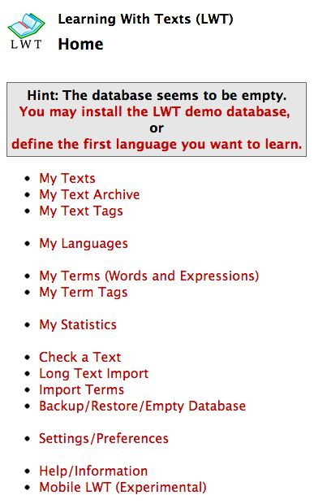
-
LWT home screen
This is normal home screen of LWT. You may choose a language here, but you can do this also later. If you you choose a language, the language filter is pre-set to that language in some other screens. The last text you've read or tested is shown, and you may jump directly into reading, testing or printing of this last text.
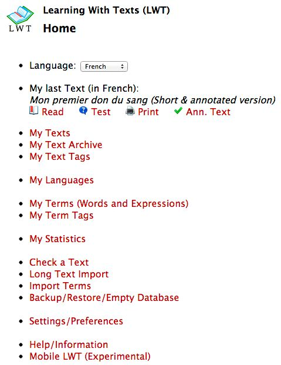
-
My Languages
The list of languages. Here you can add a new or edit an existent language. If no texts and no saved terms in a language exist, you can delete a language. If you change a language, all texts may be automatically reparsed to refresh (and correct) the cache of sentences and text items (depends on what language settings you have changed). You can do this also manually by clicking on the yellow flash icon. You can also test all (due) terms of a language or set a language as "current" language.
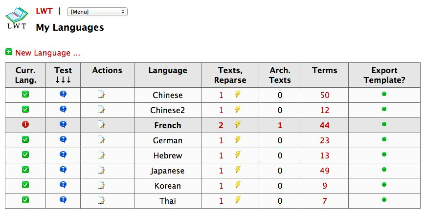
-
New/Edit Language
This is the place to define or edit a language you want to study.
If you are new to the system, use the "Language Settings Wizard" first. You only select your native (L1) and study (L2) languages, and let the wizard set all language settings that are marked in yellow. You can always adjust the settings afterwards.
Explainations of the input fields - please read also this section:
-
The three Uniform Resource Identifiers (URIs) are URIs to three web dictionaries (the second and third is optional). Use ### as a placeholder for the searchword in the URIs. If ### is missing, the searchword will be appended. If the URI to query "travailler" in WordReference is "http://www.wordreference.com/fren/travailler", you enter: "http://www.wordreference.com/fren/###" or "http://www.wordreference.com/fren/". Another example: The URI to query "travailler" in sansagent is "http://dictionary.sensagent.com/travailler/fr-en/", so you enter in LWT "http://dictionary.sensagent.com/###/fr-en/".
As URI No. 3 ("Google Translate URI") is also used to translate whole sentences, I would recommend to enter here always the link to Google Translate, like shown in the examples. The link to Google Translate is "http://translate.google.com/?ie=UTF-8&sl=..&tl=..&text=###", where the two-character codes after "sl=" and "tl=" designate the language codes (or "subtags") for the source and the target language. But a different third web dictionary is of course possible, but sentence translations may not work.
If the searchword in the three URIs needs to be converted into a different encoding (standard is UTF-8), you can use ###encoding### as a placeholder. Normally you see this right away if terms show up wrongly in the web dictionary. Example: Linguee expects the searchword in ISO-8859-15, not in UTF-8, so you define it this way: "http://www.linguee.de/search?direction=auto&query=###ISO-8859-15###". A list of encodings can be found here.
IMPORTANT: Some dictionaries (including "Google Translate") don't allow to be opened within a frame set. Put an asterisk * in front of the URI (Examples: *http://mywebdict.com?q=### or *http://translate.google.com/?ie=UTF-8&sl=..&tl=..&text=###) to open such a dictionary not within the frame set but in a popup window (please don't forget to deactivate popup window blocking in your browser!).
One dictionary (Glosbe) has been closely integrated into LWT via the Glosbe API. To use this dictionary, input the "special" dictionary link "glosbe_api.php?from=...&dest=...&phrase=###" (NO "http://" at the beginning!!) with from: "L2 language code" (the language of your texts) and dest: "L1 language code" (e.g. mother tongue). To find the language codes, open this page to select the "from" (L2) language. On the next page, select the "L2 - L1" language pair. The URL of the next page shows the two language codes, here as an example "French - English": http://glosbe.com/**fr**/**en**/. The "from" code is "fr", the "dest" code is "en". Using this dictionary makes the transfer of translation(s) from the Glosbe to LWT very easy: just click on the icon next to the translations to copy them into the LWT edit screen. I recommend to use the LWT-integrated Glosbe dictionary as the "Dictionary 1 URI". Note: I cannot guarantee that the Glosbe API and this special integration will work in the future! glosbe_api.php is just an example how one can integrate a dictionary into LWT.
You don't know how and where to find a good web dictionary? Try these dictionary directories:
- http://www.alphadictionary.com/langdir.html
- http://dir.yahoo.com/reference/dictionaries/
- http://www.dmoz.org/Reference/Dictionaries/
- http://www.lexicool.com/
If you have found a suitable web dictionary, try to translate some words and look whether the word is part of the web address (URI/URL). If yes, replace the word with ### and put this in one of the URI fields within LWT.
-
The entry "Text Size" defines the relative font size of the text. This is great for Chinese, etc.
-
"Character Substitutions" is an optional list of "from=to" items with "|" as list separator. The "from" character is replaced by the "to" character ("to" may be also empty). So different kinds of apostrophes can unified or deleted.
-
"RegExp Split Sentences" is a list of characters that signify a sentence ending (ALWAYS together with a following space or newline!). The space can be omitted (and it is normally), if you set "Make each character a word" to Yes (see below). Whether you include here ":" and ";" - that's your decision. See also this table. Characters can be also defined in Unicode form: "\x{....}"; the Chinese/Japanese full stop "ã" is then "\x{3002}" (always without "). Please inform yourself about Unicode here (general information) and here (Table of Unicode characters).
-
"Exceptions Split Sentences" are a list of exceptions that are NOT to be treated as sentence endings with "|" as list separator. [A-Z] is a character range. If you don't want to split sentences after Mr. / Dr. / A. to Z. / Vd. / Vds. / U.S.A., then you should specify these here: "Mr.|Dr.|[A-Z].|Vd.|Vds.|U.S.A." (without ").
-
"RegExp Word Characters" is a list of characters OR character ranges "x-y" that defines all characters in a word, e.g. English: "a-zA-Z", German: "a-zA-ZaöüÃÃÃÃ", Chinese: ä¸-é¾¥. See also this table. Characters can be also defined in Unicode form: "\x{....}"; the Chinese/Japanese character "one" "ä¸" is then "\x{4E00}" (always without "). So the above specification for the range of characters in Chinese "ä¸-é¾¥" can also be specified: "\x{4E00}-\x{9FA5}".
-
"Make each character a word" is a special option for Chinese, etc. This makes EVERY character a single word (normally words are split by any non-word character or a space). See also this table.
-
"Remove spaces" is another option for Chinese, etc. It removes all spaces from the text (and the example sentences). See also this table.
-
"Right-To-Left Script" must be set to "Yes" if the language/script is written from right to left, like Arabic, Hebrew, Farsi, Urdu, etc.
-
"Export Template". The export template controls "Flexible" Term Exports for the terms of that language. It consists of a string of characters. Some parts of this string are placeholders that are replaced by the actual term data, see this table. For each term (word or expression), that has been selected for export, the placeholders of the export template will be replaced by the term data and the string will be written to the export file. If the export template is empty, nothing will be exported.
To understand all these options, please study also this, look at the examples and play around with different settings and different texts.
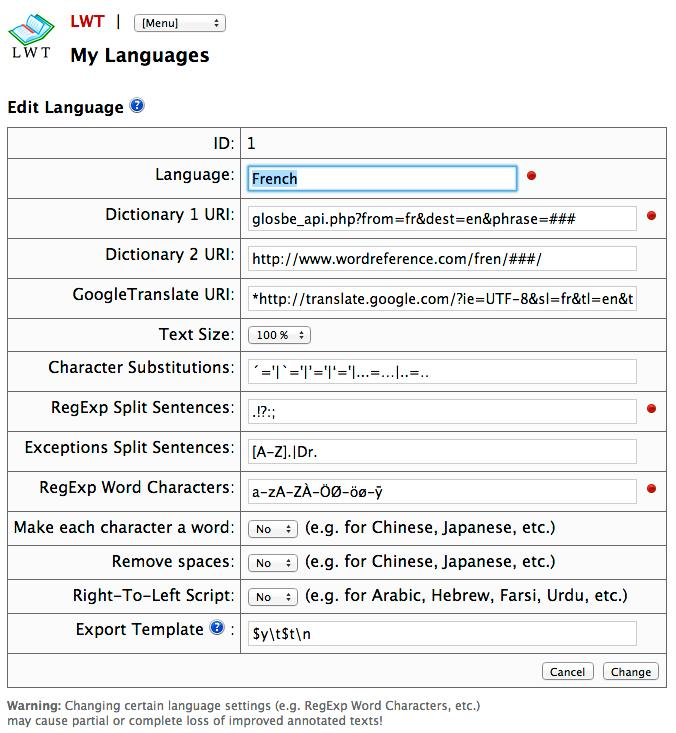
-
-
My Texts
The list of texts. You can filter this list according to language, title (wildcard = *) or text tag(s) (see also below). The most important links for each text are "Read" and "Test" - that's the place to read, to listen, to save terms and to review and test your terms in sentence context. To see all terms of a text that you have saved, click on the numbers in column "Saved Wo+Ex". To print, archive, edit (and reparse), or to delete a text, click on the icons in column "Actions". There are more actions available, see "Multi Actions".
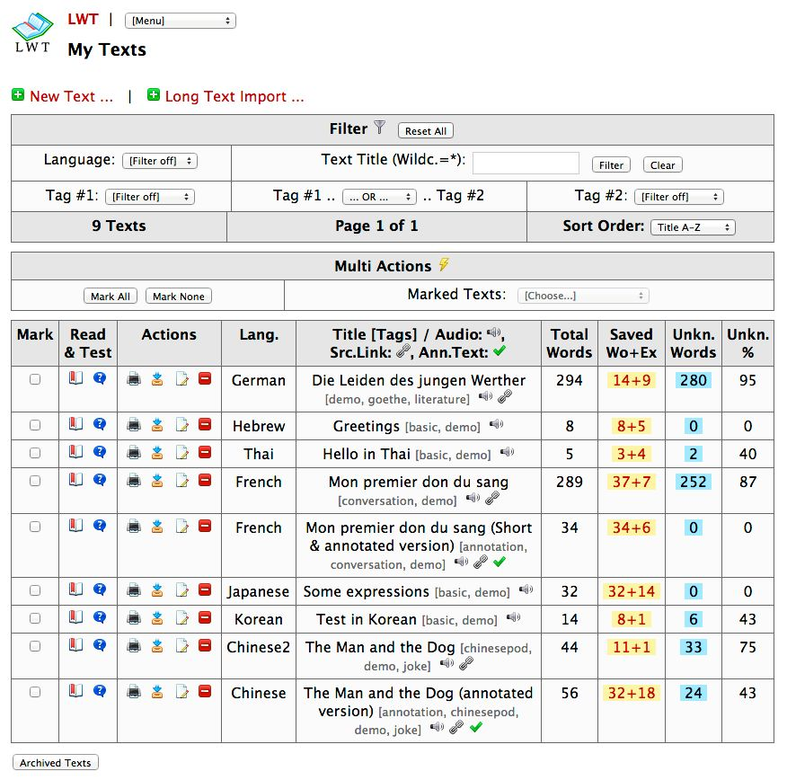
Multi Actions for marked texts
You can test the terms of the marked texts, delete or archive the marked texts. "Reparse Texts" rebuilds the sentence and the text item cache for all marked texts. "Set Term Sentences" sets a valid sentence (with the term in {..}) for all those saved or imported terms that occur in the text and that do not have a sentence at all or none with {term}. This makes it easy to "create" sentence examples for imported terms.
-
My Text Tags
The list of your text tags. You can manage your text tags here. With text tags, it will be easier to categorize and organize your texts. The tags are case sensitive, have 1 to 20 characters, and must not contain any spaces or commas.
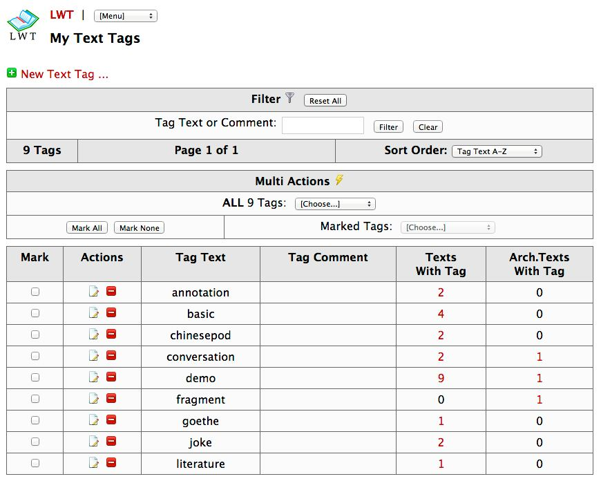
-
New/Edit Text (with Check)
This is the screen to input, check or edit a single text. Try to store not too long texts (the maximum length is 65,000 Bytes). If texts are very long (> 1000 words), certain operations (e.g. loading a text for reading, calculation of known/unknown words) may be quite slow. An audio URI and a link to the text source can also be defined. The best place to store your audios is the "media" subdirectory below the installation directory "lwt" (you have to create it yourself, and you have to copy the audio files into this directory; click Refresh if you don't see just copied media). But a cloud webspace service like DropBox is also possible. In the moment there is no possibility to import/upload an audio file within the LWT application. By the way, you can use MP3, WAV, or OGG media files, but be aware that not all browsers and/or operating systems support all media types! If you click "Check", the text will be parsed and split into sentences and words according to your language settings. Nothing will be stored if you check a text. You can see whether your text needs some editing, or whether your language settings (especially the ones that influence parsing/splitting) need an adjustment. Words (not expressions) that are already in your word list are displayed in red, and the translation is displayed. The Non-Word List shows all stuff between words. The "Check a Text" function can also be started directly from the main menu. If you click on "Change" or "Save", the text will be only saved. If you click on "Change and Open" or "Save and Open", the text will be saved and opened right away.
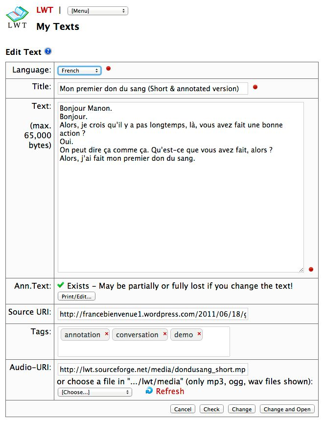
You can also import a longer text into LWT with the possibility to split it up into several smaller texts. Click on "Long Text Import". You must specify the maximum number of sentences per text, and the handling of newlines for paragraph detection. It is not possible to specify audio files or URIs.
-
Newsfeed Import
Here you can download the articles of your newsfeeds (HowTo add a new newsfeed see here). If you've set up multiple newsfeeds for your selected language, the link "update multiple feeds" will appear. By clicking that link you can update one or more feeds at once. If you've selected a newsfeed, a blue circle-arrow will appear as well as the date of your last update. A click on the circle-arrow will update your selected newsfeed. All downloaded articles will be marked by a bookmark-icon instead of the checkbox, so you can access them immediately. If a downloaded article is archived, a red mark will appear. An error may occur, when you try to download an article and the link or the text-section of the article is not found. Then a yellow warning sign appears, which can be removed temporarily by clicking on it or permanently in Manage Feeds. If you hover over an article title, a description of the article will be shown. You can open the article and, if available, the audio in a new window.
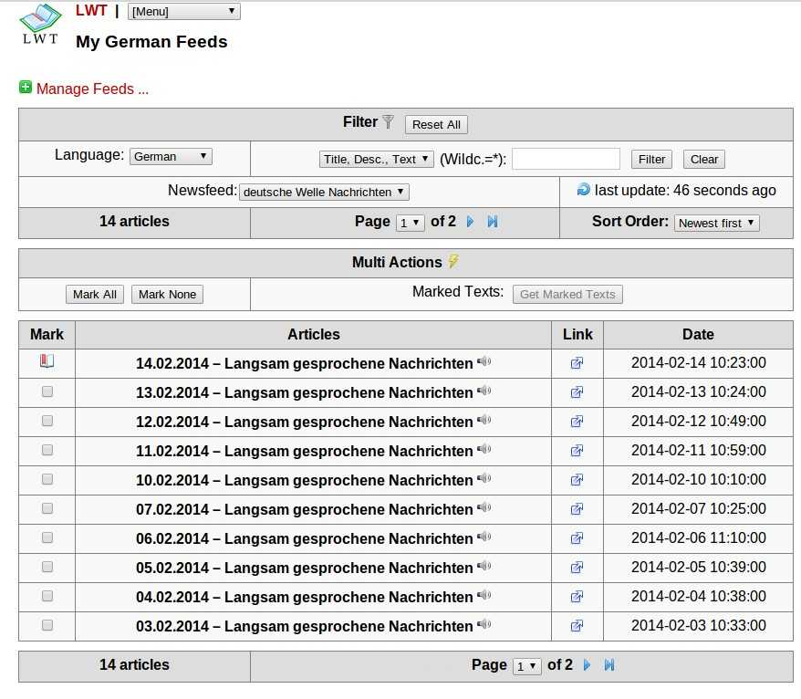
-
Manage Feeds
Multi Actions for marked newsfeeds: You can update feeds, unset unloadable articles (see my newsfeeds), delete all articles or delete feeds.
Actions: You can edit, update, delete a feed or follow the link to the newsfeed. -
New/Edit Feeds
Explainations of the input fields:
- Language: select your language, it can be changed later.
- Name: the name is limited to 40 characters, this field must not be empty.
- Newsfeed url: URL of your RSS/Atom-Feed, this field must not be empty.
- Article Section: xpath expression (i.e.: //div[@id="content-to-read"]/p), the feed wizard can be used to get the right sections, this field must not be empty.
- Filter Tags: xpath expression, the feed wizard can be used to get the right sections.
- Options:
- Edit Text: if this is checked, you can edit your articles before saving.
- Auto Update Interval: your feed will be updated automatically, when you enter MY FEEDS from the main menu.
- Max. Links: number of shown in MY FEEDS, if this is empty, the value in the settings will be used.
- Charset: this should be empty, charset sould be detected automatically.
- Max. Texts: max. number of active texts, if this is empty, the value in the settings will be used. Older texts will be moved into ARCHIVE.
- Tag: you can give the texts a tag, if this is empty, the first 20 characters of the feed name will be used. The tag will be used to move the older texts into ARCHIVE. Each feed should have its own tag.
- Article Source: some feeds have its texts integrated in the description. The articles can be cached in the database, which results in a faster download and a bigger database. Feeds with cached articles should have less Max. Links. The feed wizard can be used to detect the Article Source. If this is unchecked, each article will be downloaded from the internet.
-
Feed Wizard
Here you can edit or set up a new newsfeed in 4 steps.
-
Step 1
Insert your newsfeed url. This step is skipped, when you edit a newsfeed.
-
Step 2
- Name: the name is limited to 40 characters, this can be changed later in step 4 and must not be empty.
- Newsfeed url: URL of your RSS/Atom-Feed, this can only be changed in step 1 and must not be empty.
- Article Source: Webpage Link means, that the article will downloaded from the link, all other values mean, that the texts are cached in the database, when you update your feed. You must set the value, before you set the article section. This can only be changed here.
How to select the article section:
When you click on the text, it will be marked yellow and a value in the right selectbox will appear. You can change the marked section by selecting a value. If you click on the yellow marked text, the text will be unmarked. To select a text click the "get"-button. The xpath expression of the selected text will then appear on the top and the text will be marked green. You can unselect the selected text by clicking on the red cross. If you click on the xpath expression or on the selected text, a border around the selected text will appear. This can be used to verify the connection between text and xpath exp. in the articles. In order to change an article/webpage use the selectbox on the left. All visited articles start with an arrow "â¶". Articles from different hosts probably contain different article sections. Therefore a selectbox can be used to mark the hosts, that are "done", with a star. By clicking on the setting icon, you can choose between three selection modes. "Smart Selection" looks for ids and classes in the element node and parent node. "Get All Attributes" will compare all attributes of the element node/parent node with the text. This mode is not recommended. "Advanced Selection" lets you customize the xpath expression.
-
Step 3
This works like step 2. Only the selected sections from step 2 are clickable. Marked text will appear grey, filtered texts will have a red font.
-
Step 4
The settings are explained in New/Edit Feeds.
-
-
Read a Text
This is your "working area": Reading (and listening to) a text, saving/editing words and expressions, looking up words, expressions, sentences in external dictionaries or Google Translate. To create an expression, click on the first word. You see "Exp: 2..xx 3..yy 4..zz ...". Just click on the number of words (2..9) of the desired expression you want to save. The dictionary links for multi word expressions are always in the edit frame! You can also use the Keyboard in the text frame, see Key Bindings. Double clicking on a word sets the audio position approximately to the text position, if an audio was defined. The other audio controls are self-explanatory: automatic repeat, rewind and move forward n seconds, etc.).
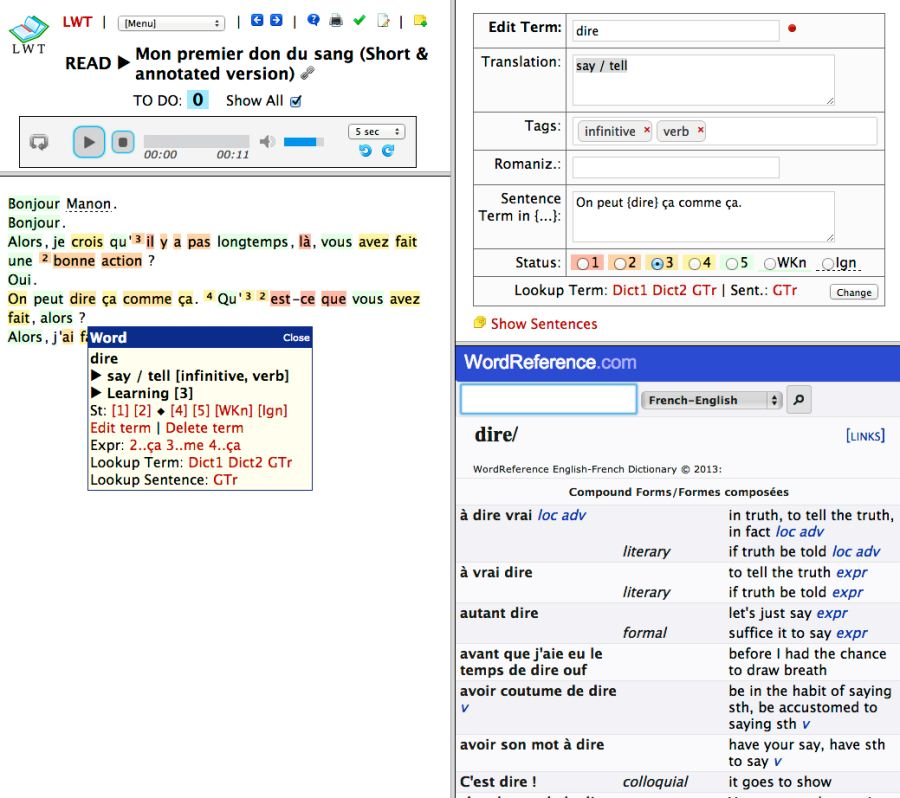
Reading a Right-To-Left Script (Hebrew):
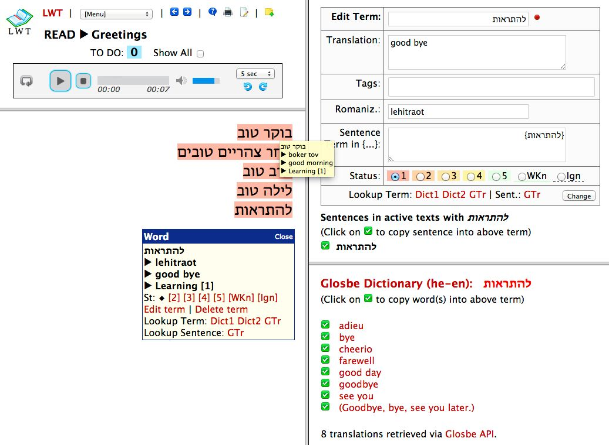
With the checkbox [Show All] you can switch the display of text:
[Show All] = ON (see below): All terms are shown, and all multi-word terms are shown as superscripts before the first word. The superscript indicates the number of words in the multi-word term.
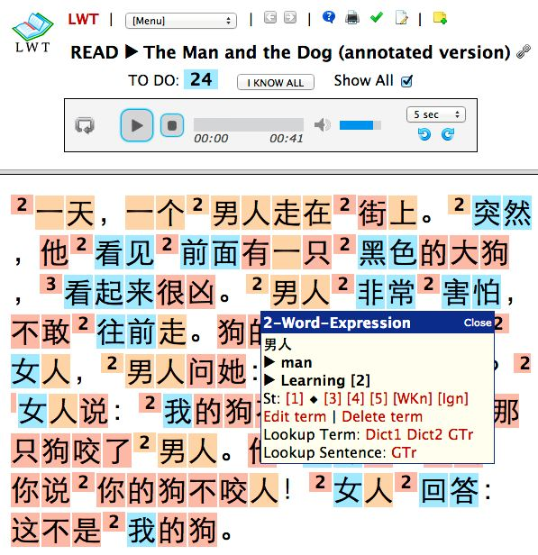
[Show All] = OFF (see below): Multi-word terms now hide single words and shorter or overlapping multi-word terms. This makes it easier to concentrate on multi-word terms while displaying them without superscripts, but creation and deletion of multi-word terms can be a bit slow in long texts.
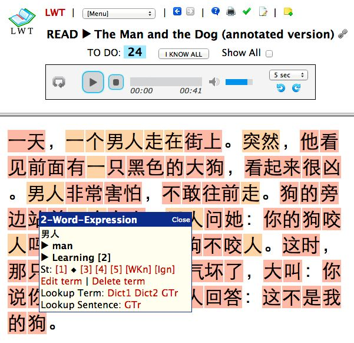
-
Test terms
Tests are only possible if a term has a translation. Terms with status "Ignored" and "Well Known" are never tested, and terms with a positive or zero score are not tested today. In summary, the term score must fall below zero to trigger the test. See also Term scores. Terms that are due today are marked with a red bullet in the term table. Terms that are due tomorrow are marked with a yellow bullet in the term table.
During a test, a status display (at the bottom of the test frame) shows you the elapsed time "mm:ss", a small bar graph, and the total, not yet tested, wrong and correct terms in this test.
In the following, L1 denotes you mother tongue (= translations), and L2 the language you want to learn (= the terms (words and expressions).
-
Test terms in a text (L2 -> L1)
This is Test #1 or #4: L2 -> L1 (recognition) - to train your ability to recognize a L2 term. You may test within sentence context (Button "..[L2].."), or just the term (Button "[L2]"). You can also use the Keyboard in the test frame, see Key Bindings.
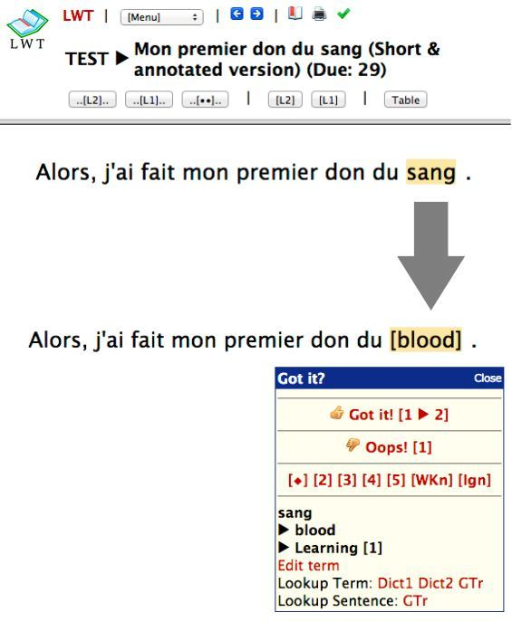
-
Test terms in a text (L1 -> L2)
This is Test #2 or #5: L1 -> L2 (recall) - to train your ability to produce a term from L1. You may test within sentence context (Button "..[L1].."), or just the term (Button "[L1]"). You can also use the Keyboard in the test frame, see Key Bindings.
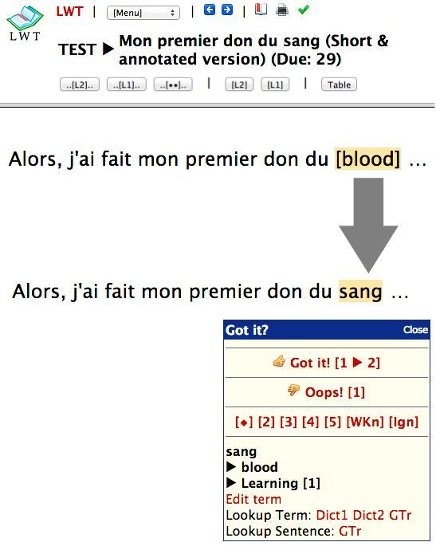
-
Test terms in a text (â¢â¢â¢ -> L2)
This is test #3: â¢â¢â¢ -> L2 (recall) - to train your ability to produce a term only from the sentence context (Button "..[â¢â¢].."). If you hover over "[â¢â¢â¢]", a tooltip displays the translation of the term. You can also use the Keyboard in the test frame, see Key Bindings.
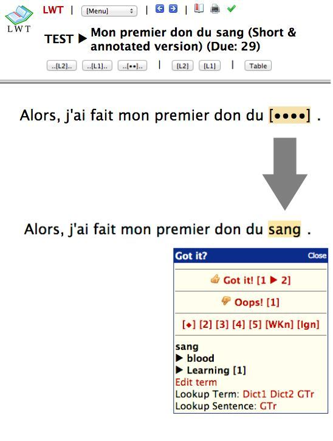
-
Test yourself in a table / word list format (Button "Table")
This is test #6: The selected terms and expressions are presented as a table. You can make invisible either the columns "Term" or "Translation", and you can hide or show the columns "Sentence", "Romanization", "Status" and "Ed" (Edit). To reveal the invisible solution ("Term" or "Translation"), you just click into the empty table cell. You can review or test yourself with or without changing the status by clicking "+" or "-" in the "Status" column. A status in red signifies that the term is due for testing. You can also edit the term by clicking the yellow "Edit" icon. Columns 2 to 6 may also my sorted by clicking on the header row. The initial sort order is according to term score.
-
Print a text
Here you print a text. Optional: an inline annotation (translation and/or romanization) of terms that are of specified status(es). This screen is also great to just read or study a text.
Chinese Text with annotation (Romanization/Pinyin and translation):
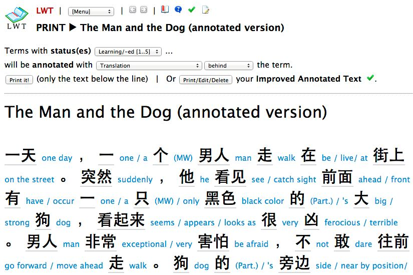
Chinese Text with annotation (only Romanization/Pinyin):
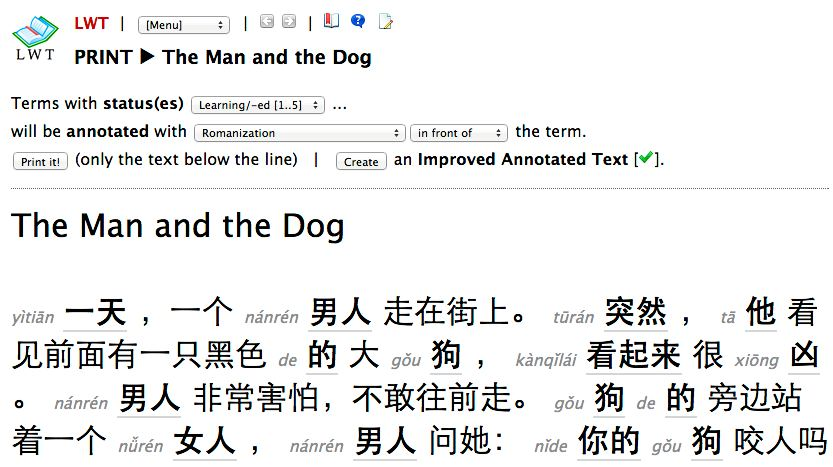
How to create, edit, and use an Improved Annotated Text:
Motivation: Annotated texts (as interlinear text) have been used for language learning for a long time. One example are the word-by-word translations in Assimil courses. The German V. F. Birkenbihl proposes the creation of interlinear word-by-word or hyperliteral translations (calling this creation "decoding") in foreign language learning. Learning Latin or Ancient Greek via interlinear texts is quite old as you can see in this YouTube video.
LWT's old "Print Screen" offers annotations, but it displays ALL translations of a term. The Improved Annotated Text feature enables you to select the best translation for every word in the text. As a result, you create an L1 word-by-word translation that is displayed above the L2 text. This interlinear text is better suited for language study, especially for beginners.
Method: While listening to the audio, first follow the blue annotations in your native language while listening and understanding. Later, after understanding the text fully, you read the foreign language text alone. Repeat this often. After these steps, you listen to the text passively or do shadowing.
On the Print Screen, click on "Create" an Improved Annotated Text. The system creates a default annotated text.
Edit Mode:
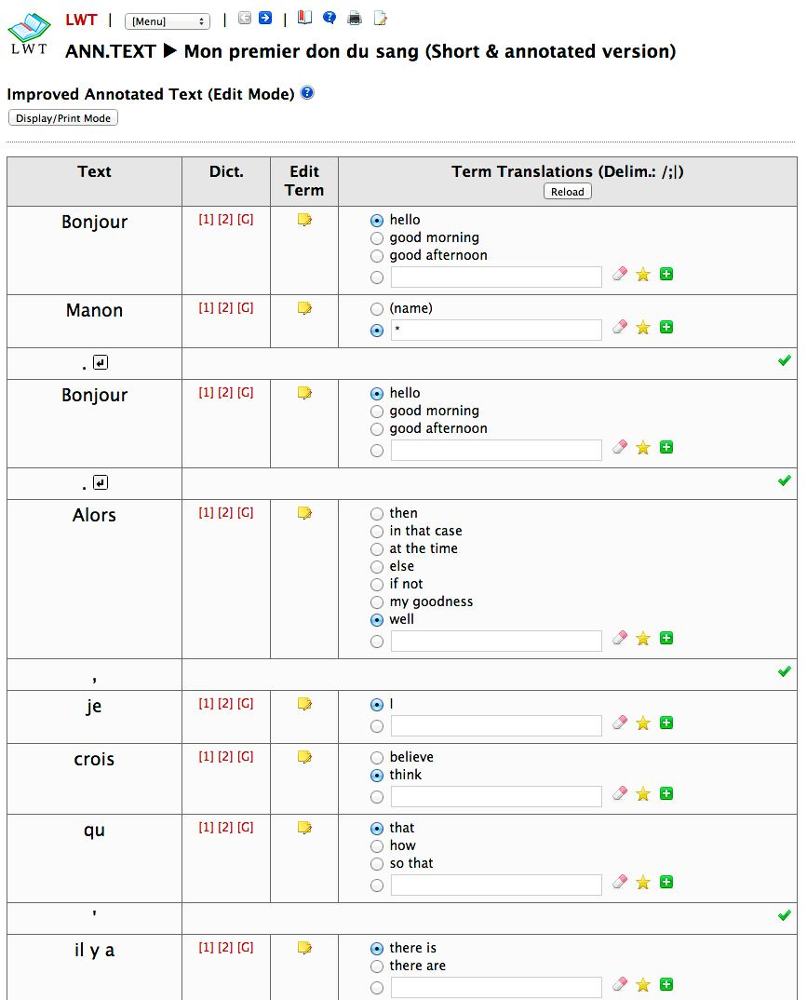
Within the "Improved Annotated Text - Edit Mode", you can select the best term translation by clicking on one of the radio buttons. To be able to do this, multiple translations must be delimited by one of the delimiters specified in the LWT Settings (currently: /;|). You can also type in a new translation into the text box at the end (this does not change your saved term translation), or you may change your term by clicking on the yellow icon or add a translation by clicking on the green "+" icon (this does change your saved term translation), and select it afterwards. The "Star" icon indicated that you want the term itself as annotation. Important: It's not possible to create new terms here - please do this in the "Read text" screen. Changing the language settings (e.g. the word characters) may have the effect that you have to start from scratch. The best time for the creation of an improved annotated text is after you have read the text completely and created all terms and expressions in the "Read text" screen.
Warning: If you change the text, you will lose the saved improved annotated text!
The list of texts. You can filter this list according to language, title (wildcard = *) or text tag(s) (see also below). The most important links for each text are "Read" and "Test" - that's the place to read, to listen, to save terms and to review and test your terms in sentence context. To see all terms of a text that you have saved, click on the numbers in column "Saved Wo+Ex". To print, archive, edit (and reparse), or to delete a text, click on the icons in column "Actions". There are more actions available, see "Multi Actions".
Multi Actions for marked texts
You can test the terms of the marked texts, delete or archive the marked texts. "Reparse Texts" rebuilds the sentence and the text item cache for all marked texts. "Set Term Sentences" sets a valid sentence (with the term in {..}) for all those saved or imported terms that occur in the text and that do not have a sentence at all or none with {term}. This makes it easy to "create" sentence examples for imported terms.
-
My Text Tags
The list of your text tags. You can manage your text tags here. With text tags, it will be easier to categorize and organize your texts. The tags are case sensitive, have 1 to 20 characters, and must not contain any spaces or commas.
-
New/Edit Text (with Check)
This is the screen to input, check or edit a single text. Try to store not too long texts (the maximum length is 65,000 Bytes). If texts are very long (> 1000 words), certain operations (e.g. loading a text for reading, calculation of known/unknown words) may be quite slow. An audio URI and a link to the text source can also be defined. The best place to store your audios is the "media" subdirectory below the installation directory "lwt" (you have to create it yourself, and you have to copy the audio files into this directory; click Refresh if you don't see just copied media). But a cloud webspace service like DropBox is also possible. In the moment there is no possibility to import/upload an audio file within the LWT application. By the way, you can use MP3, WAV, or OGG media files, but be aware that not all browsers and/or operating systems support all media types! If you click "Check", the text will be parsed and split into sentences and words according to your language settings. Nothing will be stored if you check a text. You can see whether your text needs some editing, or whether your language settings (especially the ones that influence parsing/splitting) need an adjustment. Words (not expressions) that are already in your word list are displayed in red, and the translation is displayed. The Non-Word List shows all stuff between words. The "Check a Text" function can also be started directly from the main menu. If you click on "Change" or "Save", the text will be only saved. If you click on "Change and Open" or "Save and Open", the text will be saved and opened right away.
You can also import a longer text into LWT with the possibility to split it up into several smaller texts. Click on "Long Text Import". You must specify the maximum number of sentences per text, and the handling of newlines for paragraph detection. It is not possible to specify audio files or URIs.
-
Read a Text
This is your "working area": Reading (and listening to) a text, saving/editing words and expressions, looking up words, expressions, sentences in external dictionaries or Google Translate. To create an expression, click on the first word. You see "Exp: 2..xx 3..yy 4..zz ...". Just click on the number of words (2..9) of the desired expression you want to save. The dictionary links for multi word expressions are always in the edit frame! You can also use the Keyboard in the text frame, see Key Bindings. Double clicking on a word sets the audio position approximately to the text position, if an audio was defined. The other audio controls are self-explanatory: automatic repeat, rewind and move forward n seconds, etc.).
Reading a Right-To-Left Script (Hebrew):
With the checkbox [Show All] you can switch the display of text:
[Show All] = ON (see below): All terms are shown, and all multi-word terms are shown as superscripts before the first word. The superscript indicates the number of words in the multi-word term.
[Show All] = OFF (see below): Multi-word terms now hide single words and shorter or overlapping multi-word terms. This makes it easier to concentrate on multi-word terms while displaying them without superscripts, but creation and deletion of multi-word terms can be a bit slow in long texts.
-
Test terms
Tests are only possible if a term has a translation. Terms with status "Ignored" and "Well Known" are never tested, and terms with a positive or zero score are not tested today. In summary, the term score must fall below zero to trigger the test. See also Term scores. Terms that are due today are marked with a red bullet in the term table. Terms that are due tomorrow are marked with a yellow bullet in the term table.
During a test, a status display (at the bottom of the test frame) shows you the elapsed time "mm:ss", a small bar graph, and the total, not yet tested, wrong and correct terms in this test.
In the following, L1 denotes you mother tongue (= translations), and L2 the language you want to learn (= the terms (words and expressions).
-
Test terms in a text (L2 -> L1)
This is Test #1 or #4: L2 -> L1 (recognition) - to train your ability to recognize a L2 term. You may test within sentence context (Button "..[L2].."), or just the term (Button "[L2]"). You can also use the Keyboard in the test frame, see Key Bindings.
-
Test terms in a text (L1 -> L2)
This is Test #2 or #5: L1 -> L2 (recall) - to train your ability to produce a term from L1. You may test within sentence context (Button "..[L1].."), or just the term (Button "[L1]"). You can also use the Keyboard in the test frame, see Key Bindings.
-
Test terms in a text (â¢â¢â¢ -> L2)
This is test #3: â¢â¢â¢ -> L2 (recall) - to train your ability to produce a term only from the sentence context (Button "..[â¢â¢].."). If you hover over "[â¢â¢â¢]", a tooltip displays the translation of the term. You can also use the Keyboard in the test frame, see Key Bindings.
-
Test yourself in a table / word list format (Button "Table")
This is test #6: The selected terms and expressions are presented as a table. You can make invisible either the columns "Term" or "Translation", and you can hide or show the columns "Sentence", "Romanization", "Status" and "Ed" (Edit). To reveal the invisible solution ("Term" or "Translation"), you just click into the empty table cell. You can review or test yourself with or without changing the status by clicking "+" or "-" in the "Status" column. A status in red signifies that the term is due for testing. You can also edit the term by clicking the yellow "Edit" icon. Columns 2 to 6 may also my sorted by clicking on the header row. The initial sort order is according to term score.
-
Print a text
Here you print a text. Optional: an inline annotation (translation and/or romanization) of terms that are of specified status(es). This screen is also great to just read or study a text.
Chinese Text with annotation (Romanization/Pinyin and translation):
Chinese Text with annotation (only Romanization/Pinyin):
How to create, edit, and use an Improved Annotated Text:
Motivation: Annotated texts (as interlinear text) have been used for language learning for a long time. One example are the word-by-word translations in Assimil courses. The German V. F. Birkenbihl proposes the creation of interlinear word-by-word or hyperliteral translations (calling this creation "decoding") in foreign language learning. Learning Latin or Ancient Greek via interlinear texts is quite old as you can see in this YouTube video.
LWT's old "Print Screen" offers annotations, but it displays ALL translations of a term. The Improved Annotated Text feature enables you to select the best translation for every word in the text. As a result, you create an L1 word-by-word translation that is displayed above the L2 text. This interlinear text is better suited for language study, especially for beginners.
Method: While listening to the audio, first follow the blue annotations in your native language while listening and understanding. Later, after understanding the text fully, you read the foreign language text alone. Repeat this often. After these steps, you listen to the text passively or do shadowing.
On the Print Screen, click on "Create" an Improved Annotated Text. The system creates a default annotated text.
Edit Mode:
Within the "Improved Annotated Text - Edit Mode", you can select the best term translation by clicking on one of the radio buttons. To be able to do this, multiple translations must be delimited by one of the delimiters specified in the LWT Settings (currently: /;|). You can also type in a new translation into the text box at the end (this does not change your saved term translation), or you may change your term by clicking on the yellow icon or add a translation by clicking on the green "+" icon (this does change your saved term translation), and select it afterwards. The "Star" icon indicated that you want the term itself as annotation. Important: It's not possible to create new terms here - please do this in the "Read text" screen. Changing the language settings (e.g. the word characters) may have the effect that you have to start from scratch. The best time for the creation of an improved annotated text is after you have read the text completely and created all terms and expressions in the "Read text" screen.
Warning: If you change the text, you will lose the saved improved annotated text!
All changes in the Edit screen are saved automatically in the background!To leave the Edit mode, click on "Display/Print Mode". You may then print or display (with audio) the text, and work with the text online or offline.
Print Mode:
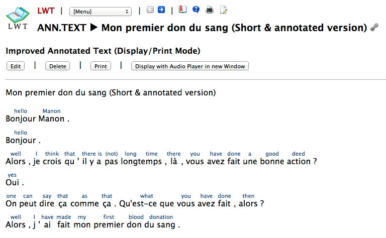
Display Mode (with audio player) in a separate window. Clicking the "T" or "A" lightbulb icons hides/shows the text or the blue annotations. You may also click on a single term or a single annotation to show or to hide it. This enables you to test yourself or to concentrate on one text only. Romanizations, if available, appear while hovering over a term.
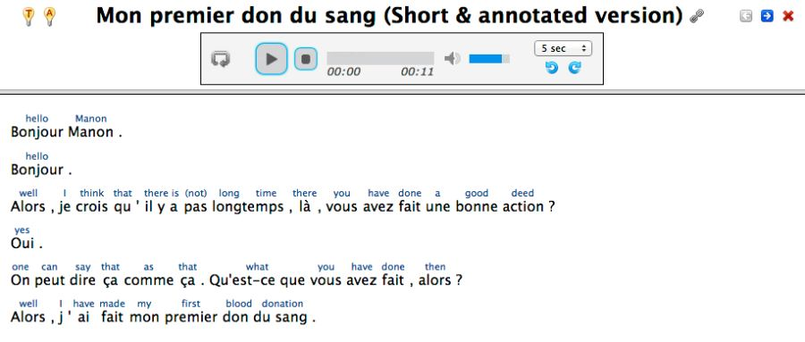
-
My Terms
The list of your saved words or expressions (= terms). You may filter the list of terms by language, text, status, term/romanization/translation (wildcard * possible) or term tag(s). Different sort orders are possible. You can do "multi actions" only on the marked or on all terms (on all pages!). "Se?" displays a green dot if a valid sentences with {term} exists. "Stat/Days" displays the status and the number of days since the last status change. The score of a term is a rough measure (in percent) how well you know a term. Read more about term scores here. Terms with zero score are displayed red and should be tested today.
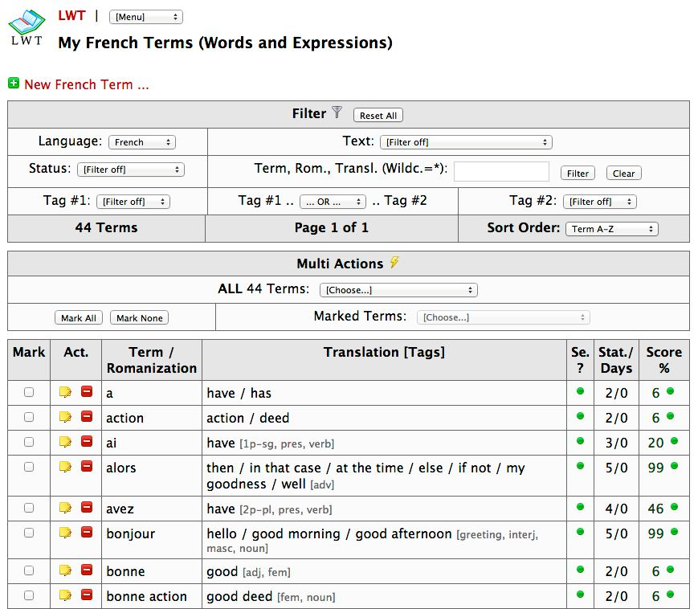
Multi Actions for marked terms
Most actions are self-explanatory. "Test Marked Terms" starts a test with all marked terms. You may delete marked terms and change the status of marked terms. "Set Status Date to Today" is some kind of "trick" for vacations, illnesses, etc.
"Export Marked Texts (Anki)" exports all terms that have been marked AND have a valid sentence with {term} for Anki. Terms that do not have a sentence with {term} will NOT be exported. Cloze testing of terms within sentence context can so be easily done in Anki. The export is tab-delimited: (1) term, (2) translation, (3) romanization, (4) Sentence without term (question of cloze test), (5) Sentence with term (answer of cloze test), (6) Language, (7) ID Number, (8) Tag list. Anki template decks (for Anki Version 1 and 2) are provided: "LWT.anki" and "LWT.apkg" in directory "anki".
"Export Marked Texts (TSV)" exports all terms that have been marked. The export is tab-delimited: (1) term, (2) translation, (3) sentence, (4) romanization, (5) status, (6) language, (7) ID Number, (8) tag list.
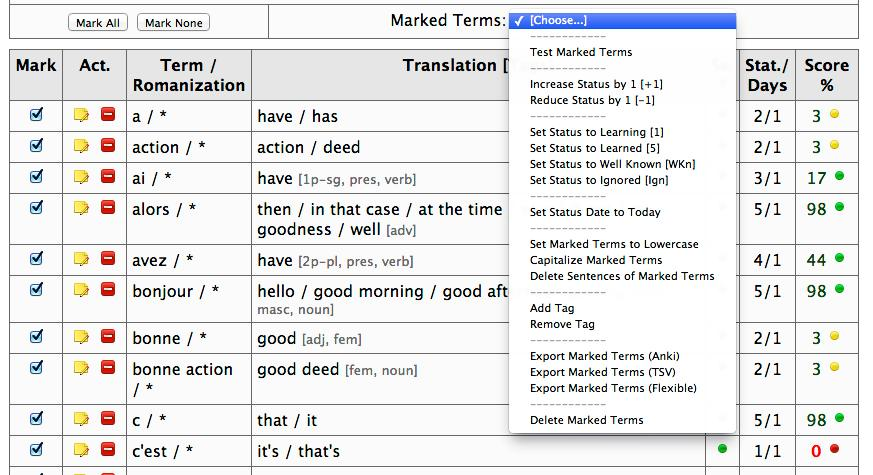
Multi Actions for all terms on all pages of the current query
Explanations see above.
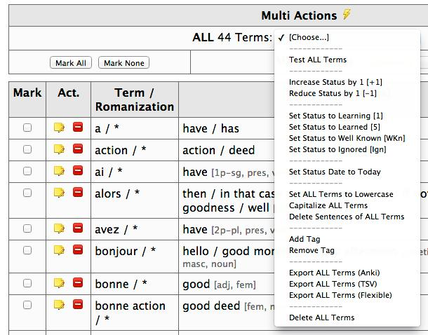
-
My Term Tags
The list of your term tags. You can manage your term tags here. With term tags, it will be easier to categorize and organize your terms. The tags are case sensitive, have 1 to 20 characters, and must not contain any spaces or commas.
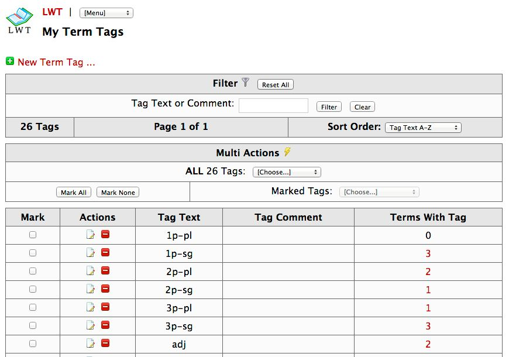
-
My Text Archive
The list of archived texts. To unarchive, to edit or to delete a text, click on the icon under "Actions". There are also "Multi Actions" available.
What is the difference between (active) texts and archived texts?
-
(Active) texts
- They have been parsed and tokenized according to the rules defined for the language.
- The result is stored in a cache of sentences and text items.
- They use a lot of space in the database.
- Reading with term creation/editing and dictionary lookup is possible.
- Testing of a stored term that occurs in the text, is possible. A terms will be tested within the context of any sentence(s) in all active texts (the number of sentences may be set (1, 2, or 3) as a preference).
-
Archived texts
- They are not parsed and tokenized, only the text is stored.
- Compared with active texts, they don't use much space in the database, because no sentences and no text items are stored.
- Reading with term creation/editing and dictionary lookup is not possible.
- Testing of a stored term, that occurs in the text, is possible, but a term will be tested ONLY within the context of the sentence(s) that has/have been stored with the term in the sentence field, if the term does not occur in any active text.
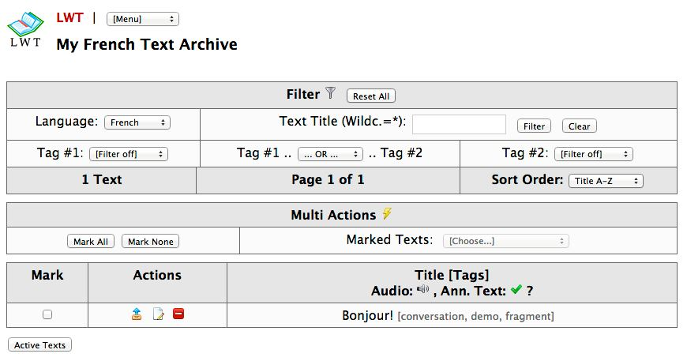
Multi Actions for marked archived texts
-
-
My Statistics
It's self-explanatory and shows your performance. The numbers in the first table are links, by clicking on them you jump to the table of all terms in that status and language.
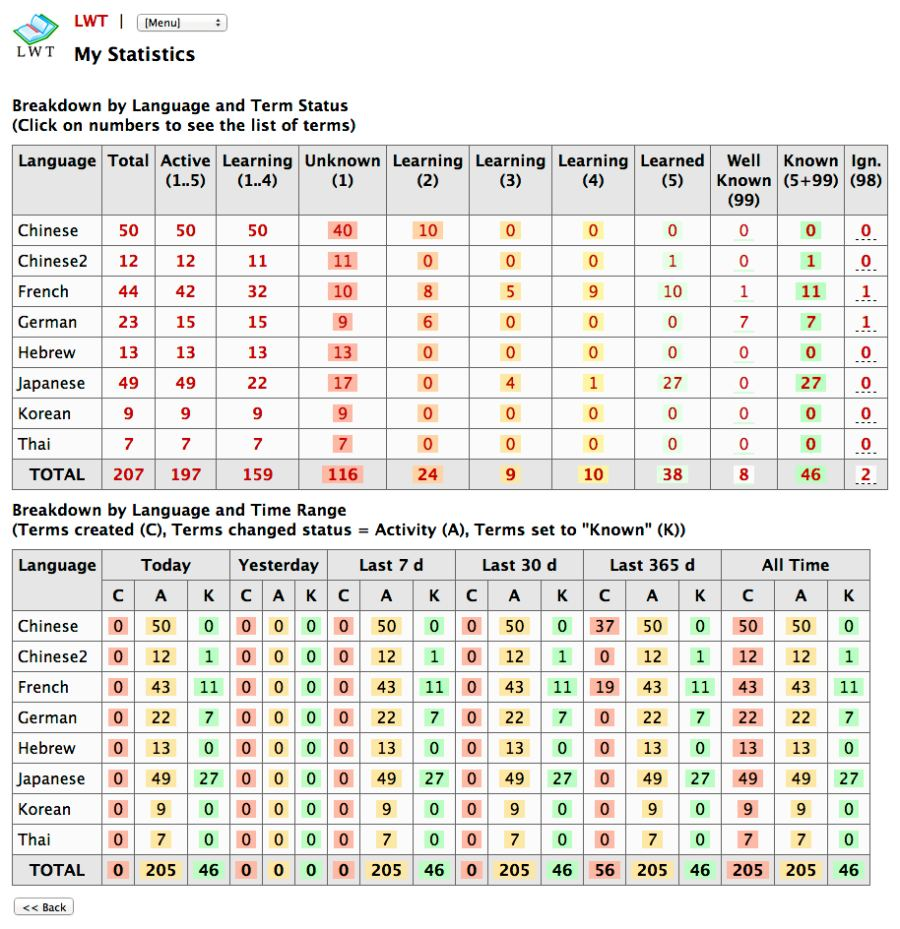
-
Import Terms
Import a list of terms for a language, and set the status for all to a specified value. You can specify a file to upload or type/paste the data directly into the textbox. Format: one term per line, fields (columns) are separated either by comma ("CSV" file, e.g. used in LingQ as export format), TAB ("TSV" file, e.g. copy and paste from a spreadsheet program, not possible if you type in data manually) or # (if you type in data manually). The field/column assignment must be specified on the left. Important: You must import a term. The translation can be omitted if the status should be set to 98 or 99 (ignore/well known). Translation, romanization and sentence are all optional, but please understand that tests are only possible if terms have a translation. If a term already exists in the database (comparison is NOT case sensitive), it will not be overwritten; the line will be ignored. You can change this by setting "Overwrite existent terms" to "Yes". Be careful using this screen, a database backup before the import and double-checking everything is always advisable!
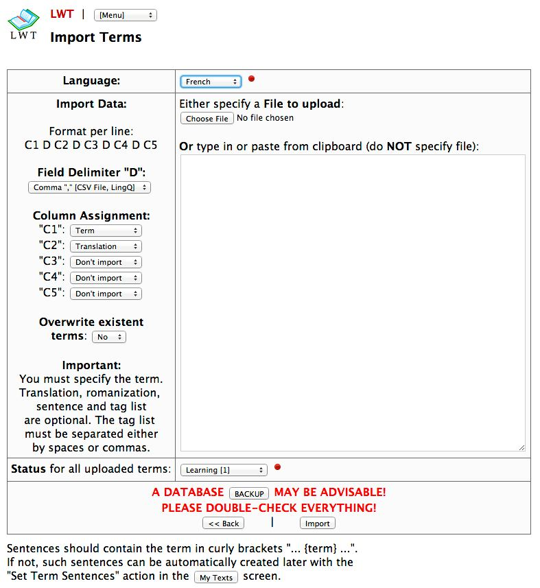
-
Backup/Restore/Empty Database
This screen offers a possibility to save, restore or empty the LWT database (ONLY the current table set!). This makes it easy to try out new things or just to make regular backups. "Restore" only accepts files that have been created with the "Backup" function above. "Empty Database" deletes the data of all tables (except the settings) of the current table set, and you can start from scratch afterwards. Be careful: you may lose valuable data!
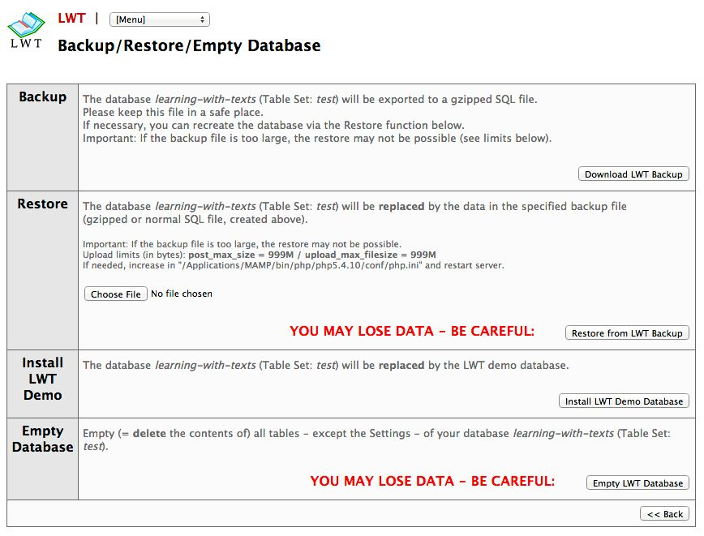
-
Settings/Preferences
In this screen you can adjust the program according to your needs. The geometric properties of the Read Text and Test screens can be changed. This is important because different browsers and font sizes may result in an unpleasant viewing experience. The waiting time to display the next test and to hide the old message after a test assessment can also be changed. The number of sentences displayed during testing and generated during term creation can be set to 1 (default), 2 or 3; if set to 2 or 3 you are able to do "MCD" (Massive-Context Cloze Deletion) testing, proposed by Khatzumoto @ AJATT. The number of items per page on different screens can be set, and you can decide whether you want to see the word counts on the textpage immediately (page may load slow) or later (faster initial loading).
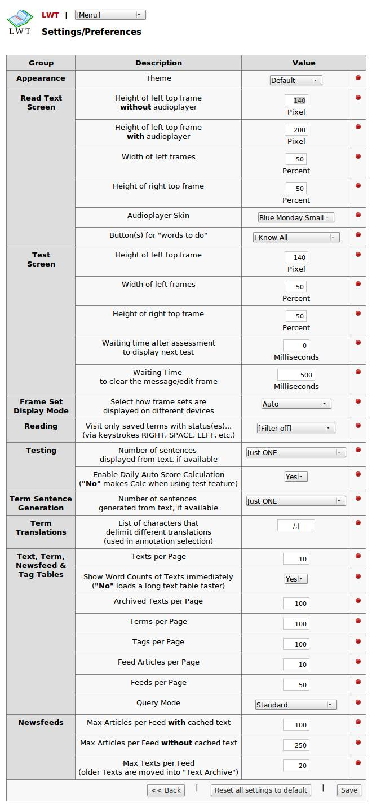
-
Multiple LWT table sets
WARNING: The use of the "Multiple LWT table sets" feature on an external web server may cause a monstrous database size if some users import many or large texts. Without further improvements (e. g. user quotas, etc.), LWT with activated "Multiple LWT table sets" is in its current version not suitable to be run in a public environment on an external web server!
When you start using LWT, you store all your data in the "Default Table Set" within the database you have defined in the file "connect.inc.php" during the LWT installation.
Beginning with LWT Version 1.5.3, you are able to create and to use unlimited LWT table sets within one database (as space and MySQL limitations permit). This feature is especially useful for users who want to set up a multi user environment with a set of tables for each user. You can also create one table set for every language you study - this allows you to create different term/text tags for each language. If you don't need this feature, you just use LWT like in earlier versions with the "default table set". Please observe that the "Backup/Restore/Empty Database" function only works for the CURRENT table set, NOT for ALL table sets you have created!
Just click on the link at the bottom of the LWT home screen where the current table set name (or "Default") is displayed. In a new screen "Select, Create or Delete a Table Set" you may switch and manage table sets. A table set name is max. 20 characters long. Allowed characters are only: a-z, A-Z, 0-9, and the underscore "_".
If you want "switch off" this feature, and use just one table set, you may define the name in the file "connect.inc.php":
$tbpref = ""; Â Â Â // only the default table set
$tbpref = "setname"; Â Â Â // only the table set "setname"
After adding such a line in the file "connect.inc.php", you are not able to select, create or delete table sets anymore. Only the one you have defined in "connect.inc.php" will be used. Please observe the rules for table set names (see above)!!
If more than one table set exists, and $tbpref was NOT set to a fixed value in "connect.inc.php", you can select the desired table set via "start.php" (use this as start page if several people use their own table set), or by clicking on the LWT icon or title in the LWT menu screen "index.php".
By hovering over the LWT icon in the top left corner of every screen, you can display the current table set in a yellow tooltip.
▶ Questions and Answers - [↑]
-
I want to use LWT, and I see something like this:

Answer: Your local webserver (Apache) is not running. Please start it via EasyPHP or MAMP control program/panel.
-
I want to use LWT, and I see something like this:

Answer: The server is running, but the application is not found. Maybe the Uniform Resource Identifier (URI) is wrong or misspelled. Please check/correct it. Or the URI is correct, and the application is installed, but not in the correct directory lwt below htdocs. Please install/copy/move it into the correct directory.
-
I want to use LWT, and I see this:
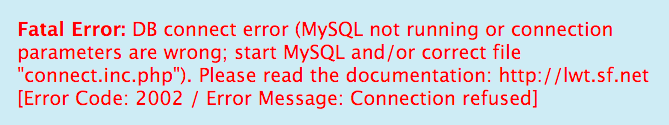
Answer: Either the database (MySQL) is not running, or the database connection parameters in ../htlwt/connect.inc.php are wrong. Please check/correct the database connection parameters and/or start MySQL via the MAMP or EasyPHP control program/panel.
-
I want to use LWT, and I see this:

Answer: The Webserver and the database is running, but the database connection parameter file ../htlwt/connect.inc.php is not found. Please rename one of the connection files (according to your server) to ../htlwt/connect.inc.php.
-
I have installed or updated LWT on Linux, but the application does not run as expected:
Answer 1: The Webserver does not have full access to all LWT files (insufficient rights). Open a terminal window, go to the directory where the directory "lwt" has been created with all LWT files, e. g.
cd /var/www/html
Now execute:
sudo chmod -R 755 lwt.Answer 2: The PHP "mbstring" extension is not installed. Please install it; see this article.
▶ Setup for Tablets - [↑]
- If you want to use LWT on a tablet: that's possible (even the audio player works!).
- In "Settings/Preferences", set the "Frame Set Display Mode" to "Auto" or "Force Mobile". On other mobile devices, you may also try "Force Non-Mobile" if you are unhappy with the results.
- Try to reduce the length of your texts to reduce scrolling.
- It's also a good idea to install and run LWT at a web hoster. So you can access LWT easily if you are often on the go.
- I hope you will enjoy using LWT on a tablet although creating new terms and copy & paste can be a bit tedious.
▶ Language Setup - [↑]
-
This section shows some language setups ("RegExp Split Sentences", "RegExp Word Characters", "Make each character a word", "Remove spaces") for different languages. They are only recommendations, and you may change them according to your needs (and texts). See also here.
-
If you are unsure, try the "Language Settings Wizard" first. Later you can adjust the settings.
-
Please inform yourself about Unicode here (general information) and here (Table of Unicode characters) and about the characters that occur in the language you learn!
| Language | RegExp Split Sentences | RegExp Word Characters | Make each character a word | Remove spaces |
|---|---|---|---|---|
| Latin derived alphabet (English, French, German, etc.) | .!?:; | a-zA-ZÃ-ÃÃ-öø-ȳ | No | No |
| Languages with a Cyrillic-derived alphabet (Russian, Bulgarian, Ukrainian, etc.) | .!?:; | a-zA-ZÃ-ÃÃ-öø-ȳÐ-Ó¹ | No | No |
| Greek | .!?:; | \x{0370}-\x{03FF}\x{1F00}-\x{1FFF} | No | No |
| Hebrew (Right-To-Left = Yes) | .!?:; | \x{0590}-\x{05FF} | No | No |
| Thai | .!?:; | à¸-๠| No | Yes |
| Chinese | .!?:;ãï¼ï¼ï¼ï¼ | ä¸-é¾¥ | Yes or No | Yes |
| Japanese (Without MeCab) | .!?:;ãï¼ï¼ï¼ï¼ | ä¸-é¾¥ã-ã¾ | Yes or No | Yes |
| Japanese (With MeCab) | .!?:;ãï¼ï¼ï¼ï¼ | mecab | Yes or No | Yes |
| Korean | .!?:;ãï¼ï¼ï¼ï¼ | ê°-í£á-á | No | No or Yes |
-
"\'" = Apostrophe, and/or "\-" = Dash, may be added to "RegExp Word Characters", then words like "aujourd'hui" or "non-government-owned" are one word, instead of two or more single words. If you omit "\'" and/or "\-" here, you can still create a multi-word expression "aujourd'hui", etc., later.
-
":" and ";" may be omitted in "RegExp Split Sentences", but longer example sentences may result from this.
-
"Make each character a word" = "Yes" should only be set in Chinese, Japanese, and similar languages. Normally words are split by any non-word character or whitespace. If you choose "Yes", then you do not need to insert spaces to specify word endings. If you choose "No", then you must prepare texts without whitespace by inserting whitespace to specify words. If you are a beginner, "Yes" may be better for you. If you are an advanced learner, and you have a possibility to prepare a text in the above described way, then "No" may be better for you.
-
"Remove spaces" = "Yes" should only be set in Chinese, Japanese, and similar languages to remove whitespace that has been automatically or manually inserted to specify words.
▶ Term Scores - [↑]
The score of a term is a rough measure (in percent) how well you know a term. It is displayed in "My Terms", and it is used in tests to decide which terms are tested next.
The score is calculated as follows:

Terms with status 1 are tested either today (if not created today) or tomorrow (if created today, or a test failed today). Terms set to status 2 should be retested after 2 days. Terms set to status 3 should be retested after 9 days. Terms set to status 4 should be retested after 27 days. Terms set to status 5 should be retested after 72 days.
Example 1: Five terms were tested today; they are now in status 1, 2, 3, 4, and 5. The term with status 1 is still unknown (failed the test, so the score is still 0 %). The term with status 5 is well known (score: 100 %).

Example 2: Five terms were not tested for some time; they are in status 1, 2, 3, 4, and 5. All of them have a score of 0, because the number of days indicate that you may have forgotten them. Therefore all should be retested today.

▶ Key Bindings - [↑]
- Important: Before using the keyboard you must set the focus within the frame by clicking once on the frame!
Key Bindings in the TEXT Frame
| Key(s) | Action(s) |
|---|---|
| RETURN | The next UNKNOWN (blue) word in the text will be shown for creation |
| RIGHT or SPACE | Mark next SAVED (non-blue) term (*) |
| LEFT | Mark previous SAVED (non-blue) term (*) |
| HOME | Mark first SAVED (non-blue) term (*) |
| END | Mark last SAVED (non-blue) term (*) |
| 1, 2, 3, 4, 5 | Set status of marked term to 1, 2, 3, 4, or 5 |
| I | Set status of marked term to "Ignored" |
| W | Set status of marked term to "Well Known" |
| E | Edit marked term |
| G | Edit marked term and open Google Translate |
| J | Edit marked term and open Google Image Search |
| A | Set audio position according to position of marked term. |
| T | Translate sentence |
| P | Pronounce term |
| ESC | Reset marked term(s) |
(*) Only saved terms with the status(es) defined/filtered in the settings are visited and marked!
Key Bindings in the TEST Frame
| Key(s) | Action(s) |
|---|---|
| SPACE | Show solution |
| UP | Set status of tested term to (old status plus 1) |
| DOWN | Set status of tested term to (old status minus 1) |
| ESC | Do not change status of tested term |
| 1, 2, 3, 4, 5 | Set status of tested term to 1, 2, 3, 4, or 5 |
| I | Set status of tested term to "Ignored" |
| W | Set status of tested term to "Well Known" |
| E | Edit tested term |
▶ About LWT Export Templates for "Flexible Exports" - [↑]
An export template consists of a string of characters. Some parts of this string are placeholders (beginning with "%", "$" or "\") that are replaced by the actual term data, see the following table. For each term (word or expression), that has been selected for export, the placeholders of the export template will be replaced by the term data and the string will be written to the export file.
A template must end with either "\n" (UNIX, Mac) or "\r\n" (Windows). If you omit this, the whole export will be one single line!
If the export template is empty, no terms of this language will be exported.
| Placeholders | Placeholders replaced by ... |
|---|---|
| %... | Raw Text |
| %w | Term (Word/Expression) - as raw text. |
| %t | Translation - as raw text. |
| %s | Sentence, curly braces removed - as raw text. |
| %c | The sentence, but the "{xxx}" parts are replaced by "[...]" (cloze test question) - as raw text. |
| %d | The sentence, but the "{xxx}" parts are replaced by "[xxx]" (cloze test solution) - as raw text. |
| %r | Romanization - as raw text. |
| %a | Status (1..5, 98, 99) - as raw text. |
| %k | Term in lowercase (key) - as raw text. |
| %z | Tag List - as raw text. |
| %l | Language - as raw text. |
| %n | Word Number in LWT (key in table "words") - as raw text. |
| %% | Just one percent sign "%". |
| $... | HTML Text. HTML special characters are escaped:< = < / > = > / & = & / " = " |
| $w | Term (Word/Expression) - as HTML text. |
| $t | Translation - as HTML text. |
| $s | Sentence, curly braces removed - as HTML text. |
| $c | The sentence, but the "{xxx}" parts are replaced by "[...]" (cloze test question) - as HTML text. |
| $d | The sentence, but the "{xxx}" parts are replaced by "[xxx]" (cloze test solution) - as HTML text. |
| $x | The sentence in Anki2 cloze test notation: the "{xxx}" parts are replaced by "{{c1::xxx}}" - as HTML text. |
| $y | The sentence in Anki2 cloze test notation, with translation: the "{xxx}" parts are replaced by "{{c1::xxx::translation}}" - as HTML text. |
| $r | Romanization - as HTML text. |
| $k | Term in lowercase (key) - as HTML text. |
| $z | Tag List - as HTML text. |
| $l | Language - as HTML text. |
| $$ | Just one dollar sign "$". |
| \... | Special Characters |
| \t | TAB character (HEX 9). |
| \n | NEWLINE character (HEX 10). |
| \r | CARRIAGE RETURN character (HEX 13). |
| \\ | Just one backslash "". |
▶ Wordpress Integration - [↑]
-
IMPORTANT: Please read this THIS WARNING first!
I CANNOT give any support for this feature, NOR can I help you with any WordPress problems!
USE AT YOUR OWN RISK!
The following instructions are for users who have installed WordPress, and want to install LWT for multiple WordPress users in conjunction with WordPress authentication. Every WordPress user will have his/her own LWT table set.
- Download and install WordPress.
- Download and install LWT into a new subdirectory "lwt", located in the main directory of your WordPress installation.
- In subdirectory "lwt", rename the file connect_wordpress.inc.php into connect.inc.php, and enter the database parameters $server (database server), $userid (database user id), $passwd (database password), and $dbname (database name, can be the same like your wordpress database, or a different one) by editing the file with a text editor.
- In the WordPress General Settings, decide whether anyone can register and use LWT (Membership = "Anyone can register"), or not (an administrator must create new users). The "New User Default Role" should be "Subscriber".
- The link to start LWT with complete WordPress authentication is:
http://...path-to-wp-blog.../lwt/wp_lwt_start.php - The link to start LWT (without WordPress authentication, only by checking the session cookie that is valid until the browser is closed) is:
http://...path-to-wp-blog.../lwt/
If the session cookie does not exist, both above start methods are the same. - To properly log out from both WordPress and LWT, use the link:
http://...path-to-wp-blog.../lwt/wp_lwt_stop.php
The LWT home page has such a link. If you only log out via the links on the WordPress pages, you will still be able to use LWT until the browser is closed. If you want to log out from both WordPress and LWT, use the above link, or click on the link on the LWT home page! - If you delete a user, you must find out its user number (table "wp_users"). After deleting the user in WordPress, you can delete all LWT tables with table names beginning with the user number plus an underscore "_". You can do this in phpMyAdmin.
▶ Database Information - [↑]
-
The following seventeen tables are one "LWT table set". The default table set has no table name prefix, so the tables are named just as written below: "settings", "languages", etc.
Additional table sets have its "table set name" plus an underscore "_" as a table name prefix: "setname_settings", "setname_languages", etc. The "table set name" is max. 20 characters long. Allowed characters are only: a-z, A-Z, 0-9, and the underscore "_".
Only if the table set is not set in "connect.inc.php", the currently used table set is saved in a global table "_lwtgeneral", in column LWTValue of row with LWTKey = "current_table_prefix". If such a row does not exist, the default table set will be used, or will be automatically created and used.
-
Table "settings" (Settings as Key-Value Pairs):
StKey varchar(40) NOT NULL,
StValue varchar(40) DEFAULT NULL,
PRIMARY KEY (StKey) -
Table "languages" (Defined languages):
LgID tinyint(3) unsigned NOT NULL AUTO_INCREMENT,
LgName varchar(40) NOT NULL,
LgDict1URI varchar(200) NOT NULL,
LgDict2URI varchar(200) DEFAULT NULL,
LgGoogleTranslateURI varchar(200) DEFAULT NULL,
LgExportTemplate varchar(1000) DEFAULT NULL,
LgTextSize smallint(5) unsigned NOT NULL DEFAULT '100',
LgCharacterSubstitutions varchar(500) NOT NULL,
LgRegexpSplitSentences varchar(500) NOT NULL,
LgExceptionsSplitSentences varchar(500) NOT NULL,
LgRegexpWordCharacters varchar(500) NOT NULL,
LgRemoveSpaces tinyint(1) unsigned NOT NULL DEFAULT '0',
LgSplitEachChar tinyint(1) unsigned NOT NULL DEFAULT '0',
LgRightToLeft tinyint(1) UNSIGNED NOT NULL DEFAULT '0',
PRIMARY KEY (LgID),
UNIQUE KEY LgName (LgName) -
Table "texts" (Active texts, parsed and cached in sentences and textitems):
TxID smallint(5) unsigned NOT NULL AUTO_INCREMENT,
TxLgID tinyint(3) unsigned NOT NULL, -- LANGUAGE FOREIGN KEY --
TxTitle varchar(200) NOT NULL,
TxText text NOT NULL,
TxAnnotatedText longtext NOT NULL,
TxAudioURI varchar(200) DEFAULT NULL,
TxSourceURI varchar(1000) DEFAULT NULL,
TxPosition smallint(5) NOT NULL DEFAULT '0',
TxAudioPosition float NOT NULL DEFAULT '0',
PRIMARY KEY (TxID),
KEY TxLgID (TxLgID) -
Table "archivedtexts" (Text Archive, not parsed and cached):
AtID smallint(5) unsigned NOT NULL AUTO_INCREMENT,
AtLgID tinyint(3) unsigned NOT NULL, -- LANGUAGE FOREIGN KEY --
AtTitle varchar(200) NOT NULL,
AtText text NOT NULL,
AtAnnotatedText longtext NOT NULL,
AtAudioURI varchar(200) DEFAULT NULL,
AtSourceURI varchar(1000) DEFAULT NULL,
PRIMARY KEY (AtID),
KEY AtLgID (AtLgID) -
Table "tags2" (Text tags and comments):
T2ID smallint(5) unsigned NOT NULL AUTO_INCREMENT,
T2Text varchar(20) CHARACTER SET utf8 COLLATE utf8_bin NOT NULL,
T2Comment varchar(200) NOT NULL DEFAULT '',
PRIMARY KEY (T2ID),
UNIQUE KEY T2Text (T2Text) -
Table "texttags" (Text tags relations):
TtTxID smallint(5) unsigned NOT NULL, -- TEXT FOREIGN KEY --
TtT2ID smallint(5) unsigned NOT NULL, -- TEXT TAG FOREIGN KEY --
PRIMARY KEY (TtTxID,TtT2ID),
KEY TtT2ID (TtT2ID) -
Table "archtexttags" (Archived text tags relations):
AgAtID smallint(5) unsigned NOT NULL, -- ARCHIVED TEXT FOREIGN KEY --
AgT2ID smallint(5) unsigned NOT NULL, -- TEXT TAG FOREIGN KEY --
PRIMARY KEY (AgAtID,AgT2ID),
KEY AgT2ID (AgT2ID) -
Table "words" (the words and expressions you have saved):
WoID mediumint(8) unsigned NOT NULL AUTO_INCREMENT,
WoLgID tinyint(3) unsigned NOT NULL, -- LANGUAGE FOREIGN KEY --
WoText varchar(250) NOT NULL,
WoTextLC varchar(250) CHARACTER SET utf8 COLLATE utf8_bin NOT NULL,
WoStatus tinyint(4) NOT NULL,
WoTranslation varchar(500) NOT NULL DEFAULT '*',
WoRomanization varchar(100) DEFAULT NULL,
WoSentence varchar(1000) DEFAULT NULL,
WoWordCount tinyint(3) unsigned NOT NULL DEFAULT '0',
WoCreated timestamp NOT NULL DEFAULT CURRENT_TIMESTAMP,
WoStatusChanged timestamp NOT NULL DEFAULT '0000-00-00 00:00:00',
WoTodayScore double NOT NULL DEFAULT '0',
WoTomorrowScore double NOT NULL DEFAULT '0',
WoRandom double NOT NULL DEFAULT '0',
PRIMARY KEY (WoID),
UNIQUE KEY WoLgIDTextLC (WoLgID,WoTextLC),
KEY WoLgID (WoLgID),
KEY WoStatus (WoStatus),
KEY WoTextLC (WoTextLC),
KEY WoTranslation (WoTranslation),
KEY WoCreated (WoCreated),
KEY WoStatusChanged (WoStatusChanged),
KEY WoWordCount (WoWordCount),
KEY WoTodayScore (WoTodayScore),
KEY WoTomorrowScore (WoTomorrowScore),
KEY WoRandom (WoRandom) -
Table "tags" (Term tags and comments):
TgID smallint(5) unsigned NOT NULL AUTO_INCREMENT,
TgText varchar(20) CHARACTER SET utf8 COLLATE utf8_bin NOT NULL,
TgComment varchar(200) NOT NULL DEFAULT '',
PRIMARY KEY (TgID),
UNIQUE KEY TgText (TgText) -
Table "wordtags" (Term tags relations):
WtWoID int(11) unsigned NOT NULL, -- TERM FOREIGN KEY --
WtTgID smallint(5) unsigned NOT NULL, -- TERM TAG FOREIGN KEY --
PRIMARY KEY (WtWoID,WtTgID),
KEY WtTgID (WtTgID) -
Table "sentences" (Sentences cache, no backup needed):
SeID mediumint(8) unsigned NOT NULL AUTO_INCREMENT,
SeLgID tinyint(3) unsigned NOT NULL, -- LANGUAGE FOREIGN KEY --
SeTxID smallint(5) unsigned NOT NULL, -- TEXT FOREIGN KEY --
SeOrder smallint(5) unsigned NOT NULL,
SeText text,
SeFirstPos smallint(5) unsigned NOT NULL,
PRIMARY KEY (SeID),
KEY SeLgID (SeLgID),
KEY SeTxID (SeTxID),
KEY SeOrder (SeOrder) -
Table "textitems2" (Text items cache, no backup needed):
Ti2WoID mediumint(8) unsigned NOT NULL,
Ti2LgID tinyint(3) unsigned NOT NULL, -- LANGUAGE FOREIGN KEY --
Ti2TxID smallint(5) unsigned NOT NULL, -- TEXT FOREIGN KEY --
Ti2SeID mediumint(8) unsigned NOT NULL, -- SENTENCE FOREIGN KEY --
Ti2Order smallint(5) unsigned NOT NULL,
Ti2WordCount tinyint(3) unsigned NOT NULL,
Ti2Text varchar(250) CHARACTER SET utf8 COLLATE utf8_bin NOT NULL,
PRIMARY KEY (Ti2TxID,Ti2Order,Ti2WordCount),
KEY Ti2WoID (Ti2WoID) -
Table "temptextitems" (memory table only used when creating texts, otherwise empty):
TiCount smallint(5) unsigned NOT NULL,
TiSeID mediumint(8) unsigned NOT NULL,
TiOrder smallint(5) unsigned NOT NULL,
TiWordCount tinyint(3) unsigned NOT NULL,
TiText varchar(250) CHARACTER SET utf8 COLLATE utf8_bin NOT NULL -
Table "tempwords" (memory table only used when importing words, otherwise empty):
WoText varchar(250) DEFAULT NULL,
WoTextLC varchar(250) CHARACTER SET utf8 COLLATE utf8_bin NOT NULL,
WoTranslation varchar(500) NOT NULL DEFAULT '*',
WoRomanization varchar(100) DEFAULT NULL,
WoSentence varchar(1000) DEFAULT NULL,
WoTaglist varchar(255) DEFAULT NULL,
PRIMARY KEY (WoTextLC) -
Table "feedlinks" (Newsfeed articles):
FlID smallint(5) unsigned NOT NULL AUTO_INCREMENT,
FlTitle varchar(200) NOT NULL,
FlLink varchar(400) NOT NULL,
FlDescription text NOT NULL,
FlDate datetime NOT NULL,
FlAudio varchar(200) NOT NULL,
FlText longtext NOT NULL,
FlNfID tinyint(3) unsigned NOT NULL,
PRIMARY KEY (FlID),
UNIQUE KEY FlTitle (FlTitle),
KEY FlLink (FlLink),
KEY FlDate (FlDate),
KEY FlNfID (FlNfID) -
Table "newsfeeds" (Newsfeed settings):
NfID tinyint(3) unsigned NOT NULL AUTO_INCREMENT,
NfLgID tinyint(3) unsigned NOT NULL,
NfName varchar(40) NOT NULL,
NfSourceURI varchar(200) NOT NULL,
NfArticleSectionTags text NOT NULL,
NfFilterTags text NOT NULL,
NfUpdate int(12) unsigned NOT NULL,
NfOptions varchar(200) NOT NULL,
PRIMARY KEY (NfID),
KEY NfLgID (NfLgID),
KEY NfUpdate (NfUpdate)
▶ Changelog - [↑]
This project's changelog. Version marked with "-fork" come from the community, other version come from the canonical LWT ("official" branch on Git). For git tags, official relases are marked as "v1.0.0", while unofficial ones a marked "v1.0.0-fork".
[Unreleased]
Changed
- Composer in no longer required for standard users (but is still required for contributing).
- Updated
README.md. - league/commonmark becomes a dev requirement (no longer required for everyone).
Fixed
- Calling
do_text.php?text=created a database error, it does no longer. - Long text were laggy in
do_text_text.phpsince 2.0.3-fork. Some other issues may have been fixed at the same time. - Possible unsecure PHP string to JS string conversion in
do_text_header.php, functionbrowser_tts.
Deprecated
- The
is_mobilefunction now always returns false. - The
wordProcessor(do_text_text.php) function was incorrect.- It now always return 0.
- Please use
wordParser,sentenceParserand some more code instead.
Removed
- Removed unnecessary dependencies:
- components/jquery version ^3.6 was required, but only 1.12.4 was in use.
- flesler/jquery.scrollto already bundled by git.
- mobiledetect/mobiledetectlib was unused. It is now removed.
- happyworm/jplayer is no longer integrated by composer (no update since 2014), but it still in use.
- The
components/folder was also deleted. It was bundling JS code from composer.- It should have been git ignored at least.
- Its content was unused. The files it was trying to use are duplicated.
2.2.0-fork (February 04 2022)
Added
- Sounds while testing terms!
- New minifier for themes: it is now very easy to create new themes.
- JS files added to documentation.
-
info_export_template.mdwas imported and adapted from official documentation.
Changed
- All the do_test*.php part do no longer use frames.
- All the display_impr_text*.php part do no longer use frames.
- It means LWT is now mobile-friendly!
- Regenerated themes.
- "do_text.php?text=..." is the official way to call texts. The "start" argument is still supported.
- New and enhanced design for the welcome page (
index.php) - Enhanced semantic for
docs/info.html, and fordocs/*.mdfiles. - The Doxygen-generated content now uses LWT default style.
Fixed
- Several database flaws fixed. Now the database should stop rotting with time.
- It is easier to close the right frames in do_text.php.
- When viewing the maximum number of results per page (edit_text.php for instance), the maximum value was shown as a floating point value.
Removed
- Floating Menu from JTricks.com was unused since 2.0.4-fork. It is now deleted.
Full Changelog
2.1.0-fork (January 09 2022)
Added
- Badges in the README providing up-to-date information on the state of the project.
- When reading, right frames are hidden and will slide into screen when needed.
Changed
- PHP >=7.4 is now the official PHP version.
- Refactored the do_test* pages.
- Better CSS minification.
- Code base inconsistencies and security issues fixed (level 5 and above psalm errors fixed).
- Code is much more strongly typed (~80% of the code base). Level 4 psalm errors partially fixed.
- GitHub continuous integration reviewed.
- Regenerated documentation.
Fixed
-
composer.jsonis now working! Thanks chaosarium for signaling this issue #4! - Since 2.0.3-fork, it was difficult to get annotations. This is no longer the case.
- tag-it, jquery-hoverintent, and jquery-xpath are now copied from raw code, and no longer integrated by composer.
Removed
- Effectively dropped support for PHP <=7.
Full Changelog
2.0.4-fork (December 03 2021)
This version brings a better composer compatibility, and starts revamping mobile compatibility.
Changed
- Starting to refactor for 2021 HTML!
- Much less iframes for reading texts.
- Now you can read texts on mobile without the experimental mobile LWT.
- Texts can be read using "focus mode" on most browsers.
- Updated documentation (expanded and refactored).
- Composer is now the recommended way to download lwt.
- PHP_codesniffer is now recommended, and no longer dev-required.
- Refactored many parts of the code, that gets easier to read.
Removed
-
composer.pharandcomposer.lockare now git ignored.
Full Changelog
2.0.3-fork (November 26 2021):
Serious maintaining is back!
This version should be the stable merge between official v2.0.2 and community maintained 1.6.31-fork.
Added
- Show Learning translation setting.
- README.md created
- Code documentation.
- Automatic text-to-speech.
- Integrating Composer to manage dependencies.
- Issue templates for GitHub.
- Markdown integration in PHP.
- Video player for texts.
- Makefile to simplify workflows.
Changed
- MeCab is now the default way to learn Japanese.
- JS and CSS are now minified.
- Code liniting.
- Important code refactors.
Full Changelog
2.0.2 (September 07 2021)
Fixed
- An incompatibility with PHP 8+ (removed function "get_magic_quotes_gpc()" in PHP 8+) has been fixed. Thanks to Lucas L. for the hint.
2.0.1 (October 07 2020)
Fixed
- A bug when visiting terms/expressions with key strokes LEFT or RIGHT after a previous status change and with a set status filtering has been fixed.
2.0.0 (October 04 2020)
Fixed
- No code changes. Sourceforge links corrected.
- The old links [lwt.sf.net], [lwt.sourceforge.net] or [sourceforge.net/projects/lwt] are no longer valid!
- The new links are now learning-with-texts.sourceforge.io (documentation and demo database) and sourceforge.net/projects/learning-with-texts (project home and downloads).
1.6.3 (April 06 2020)
Added
- Some missing confirmation dialogues (when deleting a single text, text tag, term, term tag, or language) added.
1.6.2 (March 10 2018, this page "info.php" last updated August 12 2019)
Added
- Audio playback speed can now be set between 0.5x and 1.5x.
- Waiting wheel (to indicate saving data to database in the background) added in "Edit Improved Annotated Text".
- Checking for characters in the Unicode Supplementary Multilingual Planes (> U+FFFF) like emojis or very rare characters improved/added. Such characters are currently not supported.
Changed
- jQuery library updated to v1.12.4.
"Mobile_Detect.php" updated to v2.8.30. - LWT demo database updated.
- Documentation updated.
Fixed
- Some minor glitches fixed.
Removed
- Glosbe API calls via "glosbe_api.php" in demo database and language settings wizard removed - they often did not work due to API restrictions. The file "glosbe_api.php" is still supplied as an example of a close integration of a dictionary API into LWT.
1.6.1 (February 01 2016, this page "info.php" last updated January 13 2018)
Changed
- The jQuery and jPlayer libraries have been updated to v1.12.0 and v2.9.2, respectively. The jQuery.ScrollTo package has been updated to v2.1.2.
Link to Chinese text segmentation "Jieba" added in documentation (Important Links - Additional Resources - For learners of Chinese).
1.6.31-fork (October 03 2016)
Fixed
- Multibyte character parsing fixed (i.e. Chinese).
1.6.30-fork (July 28 2016)
Added
- MeCab support (in development).
Fixed
- Google translate API updated.
1.6.29-fork (April 21 2016):
Changed
- In appreviations like 'Mr.' the dot is now part of the term. A reparse of texts is needed to take effect.
- Wizard Language: Arabic 'RegExp Word Characters' changed.
Fixed
- ggl.php API doesn't work (Token generation fixed).
- Dictionary doesn't open.
- Negative/uncorrect WordCount in 'edit_texts_php'.
1.6.28-fork (April 07 2016):
Added
- DB collation check added.
Changed
- Wizard Language Defaults changed.
Fixed
- Access denied, LOAD DATA INFILE error (text parsing on a server).
- 'remove spaces' not working.
1.6.27-fork (February 21 2016):
Fixed
- Bugfix: DB backup/import errors.
- RegExp Word Characters are checked for correct syntax when creating/updating language.
Removed
- thumbnail/image support removed.
1.6.26-fork (February 11 2016):
Changed
- Demo Database updated.
- mysqli changes from orig. LWT.
- php-mobile-detect updated.
Fixed
- Some bugfixes: errors when emptying database and installing Demo database, added 'follow redirect' to feed.
1.6.25-fork (January 31 2016):
Added
- Added German Feed 'NachDenkSeiten'(url:'http://www.nachdenkseiten.de/?feed=audiopodcast', Article Section:'//encoded/p', Options:'Article Source:encoded') to DemoDatabase.
- Added saved expressions to CheckText.
Changed
- SplitCheckText rewritten.
- Database changes (table 'temptextitems'): added: TiCount, dropped: TiLgID, TiTxID, TiTextLC and index TiTextLC
- Database changes : dropped: index WtWoID, index TtTxID, index AgAtID
Fixed
- Bugfix: No Word Counts displayed when text has no saved words.
1.6.0 (January 28 2016):
Changed
- As mysql_* database calls are deprecated and are no longer supported by PHP, they have been changed to the corresponding mysqli_* calls. If you run a server with PHP version 7.0.0 or higher, you MUST use LWT 1.6.0 or higher. Thanks to Laurens Vercaigne for his work!
- Debugging updated. Status information on start page improved. Documentation updated.
1.5.21 (January 14 2016):
Changed
- Soft hyphens (U+00AD, UTF-8: 0xC2 0xAD) are now automatically removed during text import.
- "Mobile_Detect.php" updated to v2.8.19.
1.6.24-fork (January 11 2016):
Added
- Added possibility to switch between 'unique' and 'total' word count by clicking on 'u'/'t'-button.
Changed
- HTML lang attribute added in testing frame.
- Speed improvements in 'My Texts' screen.
- Replaced precentage of 'unknown words' by 'word charts' in 'My Texts' screen.
Removed
- Deleted Setting: Show Word Counts of Texts immediately
1.6.23-fork (December 13 2015):
Added
- HTML lang attribute added in reading frame.
Changed
- Jplayer, Jquery, JqueryUI updated.
- Google Translate API changes: random google domain access added (domain can be changed in googleTranslateClass.php), updated generateToken.
1.6.22-fork (November 11 2015):
Added
- Google Translate API(ggl.php): added headers and corrected token.
1.6.21-fork (October 16 2015):
Added
- Google Translate API(ggl.php): added token to URL.
1.6.20-fork (September 26 2015):
Changed
- Jquery Changes in the reading frame for hover_over/highlight words.
Fixed
- Google TextToSpeech callback fixed.
1.6.19-fork (August 29 2015):
Added
- New default settings: 'Tooltips' (new Default: 'JqueryUI') and 'Position of translations' (new Default: 'below').
Changed
- Mysql login process changed.
- JPlayer CSS and Skin changes. Skin are now integrated into 'Themes'.
1.6.18-fork (June 11 2015):
Added
- New Setting: Position of translation
- Translations can now be displayed 'behind', 'in front of', 'above' or 'below' the term in the reading frame.
- Improved encoding detection in 'newsfeed import'.
Fixed
- Bugfix: Words that are created by 'bulk import' are not updated in the reading frame (i.e. when new translations are added afterwards).
- Bugfix: mysql error 'duplicate entry' in 'newsfeed import'.
1.6.17-fork (May 09 2015):
Fixed
- Bugfix: Newsfeed Import doesn't load new links if WordPress is used for multiple users.
1.6.16-fork (May 01 2015):
Changed
- Improved Sentence Bondary Detection when parsing texts.
- User ID is saved in the PHP Session Variable (instead of a Cookie) if wordpress is used to log in.
- Switch to mysqli extension for database connection.
- Minified CSS and Javascript files; the uncompressed files can be found in the directory 'src'.
1.6.15-fork (April 10 2015):
Changed
- Some CSS changes.
Fixed
- Ggl API retrieval error fixed.
1.6.14-fork (March 28 2015):
Changed
- Glosbe API now uses javascript (browser based) instead of php(server based) to prevent possible retrieval errors when LWT is installed on a webhoster for multiple users.
1.6.13-fork (March 23 2015):
Added
- New Setting: Tooltips (JQueryUI will show images in Tooltips in the Read Text Screen)
- New Feature: You can now add thumbnail images to your terms. If you click on the icon at the left of the translation field in the new_term/edit_term frame/window you can select an thumbnail from 'google image search'. In order to display the images in the Read Text Screen you must set 'Tooltips' to 'JQueryUI'. The thumbnail images are not included in the backup at the moment.
- New Feature: Key binding J for edit term with Google Image Search added
Fixed
- Bugfix: 'error when making backup' fixed
1.6.12-fork (March 01 2015):
Changed
- Jquery, JqueryUI updated
Fixed
- CSS/jquery fixes when selecting multiple word expressions in text frame
- Bugfix: new or imported multiple word expressions are not show in the text with 'remove Spaces' is 1 and 'split Each Char' is 0
1.6.11-fork (February 09 2015):
Fixed
- Bugfix: 'Show term sentences' and 'Create term sentences' fixed
1.6.10-fork (January 25 2015):
Changed
- CSS changes for firefox (version >= 35) in dark themes
Fixed
- Bugfixes in bulk import terms
1.6.9-fork (December 21 2014):
Fixed
- Getting article from feed even if there is no link
1.6.8-fork (December 19 2014):
Changed
- Google API can now do a requery
- Dict Lookup from bulk import terms frame is now possible
1.6.7-fork (December 18 2014):
Fixed
- Database errore in newsfeeds
1.6.6-fork (December 16 2014):
Added
- Ability to change audio playback speed (doesn't work when using the flash plugin)
- Combine translation field option when importing words ('Merge translation fields' or 'Update existing translations')
1.6.5-fork (December 01 2014):
Fixed
- Error in 'upload_words.php'
1.6.4-fork (November 29 2014):
Fixed
- Wrong dict links for sentence translate
1.6.3-fork (October 12 2014):
Added
- Key binding G for edit term with Google Translate added
Changed
- Google api rewritten (works on webhoster with cURL-plugin)
1.6.2-fork (October 06 2014):
Added
- Key binding T for translating sentence added
- New Backup Option: official LWT backup added
Changed
- Database Changes: indexes changed in table words
1.6.1-fork (September 28 2014)
Added
- Translations of terms can now be display in the reading frame
- Key bindings when hovering over words in the reading frame
- Bulk translate new words in the reading frame
Changes from official LWT version 1.5.20 imported:
-
Possibility to display similar terms while creating or editing a term. This will give you more language insight, and may ease inputting new terms that are similar. The number of displayed similar terms can be set from 0 (old behavior, default) to 9 on the "Settings" page. Clicking on the green icon in front of a similar term will copy the translation and romanization into the form fields for further editing. Important: If you want to use this new feature, you must change the setting "Similar terms to be displayed while adding/editing a term" to a value greater than 0. It will make more sense to do this if you have already many saved terms (e.g. more than 1,000). If you start with a language and have only a few terms, no or not very similar terms will be normally displayed and this feature will not make much sense.
-
"https://" dictionary URIs are now allowed in the language settings. Checking of dictionary URIs in the language settings has been improved.
Changed
-
The Glosbe dictionary page has been improved with a simple form to change the term and do a requery if you are unhappy with the query results.
-
The jQuery and jPlayer libraries have been updated to v1.11.1 and v2.7.0, respectively. The jQuery.ScrollTo package has been updated to v1.4.13. The Floating Menu package has been updated to v1.12.
-
Broken links corrected or deleted. From now on, only the installation with EasyPHP for Windows and MAMP for Mac OS X will be explained in detail and is recommended. Other local web server packages, like XAMPP, etc., are of course still possible, but it's beyond the scope of this document to explain all the details for every webserver package (it will also confuse most LWT users who are not familiar with web server packages and their setup).
-
"Mobile_Detect.php" updated to v2.8.3.
-
Documentation updated.
1.5.20 (September 22 2014):
Changed
- "Mobile_Detect.php" updated to v2.8.3.
Fixed
- Missing volume controls in audio player (only on mobile devices) fixed.
1.5.19 (September 15 2014):
- Missing tag cache updating fixed (in "Add tag in all/marked texts or terms").
- Tag caches now also work properly if several instances of LWT are installed in parallel directories on the same server.
- Information about which web browser to use for LWT in this document updated.
1.5.18 (September 14 2014):
Added
- Possibility to display similar terms while creating or editing a term. This will give you more language insight, and may ease inputting new terms that are similar. The number of displayed similar terms can be set from 0 (old behavior, default) to 9 on the "Settings" page. Clicking on the green icon in front of a similar term will copy the translation and romanization into the form fields for further editing. Important: If you want to use this new feature, you must change the setting "Similar terms to be displayed while adding/editing a term" to a value greater than 0. It will make more sense to do this if you have already many saved terms (e.g. more than 1,000). If you start with a language and have only a few terms, no or not very similar terms will be normally displayed and this feature will not make much sense.
- New sort option for texts, terms or tags: "Oldest first".
- The Catalan language has been added to the Language Settings Wizard.
Changed
- "https://" dictionary URIs are now allowed in the language settings. Checking of dictionary URIs in the language settings has been improved. The Glosbe dictionary page has been improved with a simple form to change the term and do a requery if you are unhappy with the query results.
- The jQuery and jPlayer libraries have been updated to v1.11.1 and v2.7.0, respectively. The jQuery.ScrollTo package has been updated to v1.4.13. The Floating Menu package has been updated to v1.12.
- Some error messages (term/tag already exists) have been improved.
- Documentation updated.
Fixed
- Some minor bugs fixed: media selection in archived texts, tag import errors, adding existing tag errors, etc.
Removed
- The audio player skin selection has been removed; the "Blue Monday Small" skin is the standard skin beginning with this release.
1.6.0-fork (September 12 2014):
Added
- New Feature: Longer (>9) expressions can now be saved
- New Feature: TextToSpeech support for words added
- New Feature: experimental google api (use 'ggl.php' instead of '*http://translate.google.com' for google translate)
- New Feature: new word select mode in read texts (hold down mouse button)
Changed
- Database Changes: table textitems replaced by textitems2, temporary tables added, global table tts added
- statistics.php, upload_words.php rewritten
1.5.17 (June 08 2014):
Added
- New Feature: Selecting terms according to a text tag
- New Feature: Start a document where you left off (only "Read Text Screen")
- New Feature: Improved Search/Query for Words/Texts
- New Feature: Automatically import texts from RSS feeds (for more info see: Newsfeed Import)
- New Setting: Button(s) for "words to do" "IGNORE ALL"/"I KNOW ALL"
- New Setting: Theme
- New Setting: term/word query with standard/regexp/regexp CS
- New Sort option "Oldest First"
- New option "Set Active Term(1-5) Sentences" in My Texts
Changed
- JQuery, JQuery UI, JPlayer, jQuery.ScrollTo, Tag-it, Sorttable and Floating Menu updated
- Database table optimization: first check, only optimize if (Overhead >10% of table and > 100KB) or (Overhead > 1,0MB)
- Database table optimization: data types changed.
- Documentation updated.
Fixed
- Importing multiple words with the same tag causes an error
- Can't select media in Archived Texts
- Confirmation-popup when leaving via selectbutton in Settings/Preferences even if there are no changes (chrome-browser)
- Bottom page select doesn't work in firefox (edit_texts.php, edit_words.php, edit_archivedtexts.php, edit_texttags.php, edit_tags.php)
- Setting a tag where tag already exists causes an error
- New tag isn't saved in SESSION VAR (when adding a new text with a new tag / may cause an error when editing that text)
1.5.17 (August 15 2014, this document updated Aug 17 2014 and Aug 24 2014):
Changed
- Documentation updated. Broken links corrected or deleted. From now on, only the installation with EasyPHP for Windows and MAMP for Mac OS X will be explained in detail and is recommended. Other local web server packages, like XAMPP, etc., are of course still possible, but it's beyond the scope of this document to explain all the details for every webserver package (it will also confuse most LWT users who are not familiar with web server packages and their setup).
- Documentation updated on August 17 2014: Installation screencasts added.
- Documentation updated on August 24 2014: Linux (Ubuntu, LinuxMint) installation hints and screencast added.
Fixed
- Minor bug in Utilities fixed.
1.5.16 (February 19 2014):
Changed
- Documentation updated.
Fixed
- Paging (via page select, and only at the bottom of a page) did not work correctly in all cases, has been corrected.
1.5.15 (December 17 2013):
Changed
- Documentation updated.
Fixed
- Corrected wrong language code (French) within the language wizard definitions.
1.5.14 (August 05 2013, this document updated Oct 30 2013):
Changed
- Documentation updated on October 30 2013.
Fixed
- Wrong text display in Print Screen corrected. Special handling of word breaks (if "Remove spaces" = Yes) removed.
1.5.13 (July 22 2013):
Changed
- License texts updated according to text on unlicense.org.
- Documentation updated.
Fixed
- Removed an erroneous extra space in "wp_logincheck.inc.php". Thanks to a poster in the help forum for pointing this out!
- Minor bug fixes.
1.5.12 (July 16 2013):
Added
- New Sort option for Terms/Expressions: "Word Count in Active Texts" (Descending). Only when you choose this sort option, the word count will be calculated, displayed, and used for sorting the table. This may slow down the term table display. If you prefer faster term table display, choose the other sort options.
Changed
- Much better Tablet/iPad® user experience in screens with several frames. There is a new setting "Frame Set Display Mode" where you can select how frame sets are displayed on different devices (default: "Auto"). If you prefer the old mode also on mobile devices, set this to "Force Non-Mobile".
- Tagging and JQuery UI updated.
- Better error message when Glosbe API call fails.
- Unsaved changes alerts extended to tag changes.
Fixed
- Tags cache updating corrected: when LWT table set has been changed or after restore/emptying tables.
1.5.11 (July 12 2013):
Added
- If an improved annotated text exists, highlight the selected term translation in red in the text window popup and the text display frame (when using the keyboard).
- New language settings wizard.
Changed
- Better check on duplicate language names.
- Text window popup title is now a link (text color: yellow) to make editing an existent term a little easier.
- Documentation updated.
Fixed
- Some minor bug fixes.
1.5.10 (July 07 2013):
Added
- New alerts in some forms when there are unsaved changes during unload event.
Changed
- Improved database error checking and reporting, better error messages when fatal errors occur, both with traceback information.
- Some improvements in Glosbe-LWT integration.
- Documentation updated.
Fixed
- Default values corrected in new language form.
- SQL query optimizations in 1.5.8/1.5.9 caused problems, old versions restored.
1.5.9 (July 03 2013):
Added
- Long Text Import: Importing a long text via file upload or from a text box, with splitting options.
- Possibility to save the source URI with an active or archived text.
Change
- Documentation and some screenshots updated.
Fixed
- Missing code in tag management stylesheet restored.
1.5.8 (June 27 2013):
Changed
- Optimization of SQL queries for text and print display (reducing query time by up to thirty percent).
- Checking database status and database upgrade program code rewritten.
- Some minor improvements and bugfixes. Documentation updated.
1.5.7 (June 25 2013):
Added
- A new 3rd "Flexible" term export is introduced, controlled by an "Export Template" in the language settings. Read more ...
Changed
- Texts are now automatically reparsed, however only after changing language settings that influence the sentence and textitems cache.
- Documentation updated.
Fixed
- Some minor corrections in some SQL CREATE/INSERT statements. MySQL session string is now set to an empty string to avoid too strict SQL checking. Thanks to a poster in the help forum for pointing this out!
1.5.6 (June 22 2013):
Fixed
- Two SQL statements (Anki/TSV export of marked terms) corrected. Thanks to a poster in the help forum for pointing this out!
1.5.5 (June 21 2013):
Added
- Integration of the Glosbe API into LWT via a "special" dictionary link. Read more here.
- LWT-WordPress integration, read more here (only for users who want to use WordPress authentication together with the LWT multiple user/table set feature introduced in version 1.5.3).
Changed
- Some minor improvements: Window width of dictionary popups changed from 600 to 800 Pixel. No "_lwtgeneral" operations if table prefix is fixed.
- Documentation updated.
1.5.4 (June 19 2013):
Added
- If more than one table set exists, and $tbpref was NOT set to a fixed value in "connect.inc.php", you can now select a table set via "start.php", or by clicking on the LWT icon or title in the LWT menu screen "index.php".
- By hovering over the LWT icon in the top left corner of every screen, you can now display the current table set in a yellow tooltip.
- A new test/review type "Table" has been added in the testing area. Words, translations, romanizations, sentences and status are presented in a table. You may hide and/or sort columns. After testing yourself, you can reveal the hidden information by clicking into the table cell, and change your status.
Changed
- Player appearance improved. Some settings, that were not saved until now, are now automatically saved. Documentation and some screenshots updated.
1.5.3 (June 14 2013):
Added
- New Feature: It is now possible to create and to use not only ONE set of LWT tables within one database. You are now able to create and use unlimited LWT table sets within one database (as space and MySQL limitations permit). This feature is especially useful for users who want to set up a multi user environment with a set of tables for each user. You can also create one table set for every language you study - this allows you to create different term/text tags for each language. If you don't need this feature, you just use LWT like in earlier versions with the "default table set". Read more here and here.
Changed
- Complete code review. Some minor improvements and bugfixes. Documentation & Anki 1+2 template decks updated.
1.5.2 (June 09 2013):
Added
- Easy navigation to the previous and the next text (according to current text filters and sort order) is now possible.
Changed
- "Backup" does not store anymore the tables 'sentences' and 'textitems'. These tables are now automatically recreated (by reparsing the texts) within "Restore". This makes backup faster and the backup file much smaller, while "Restore" will take a bit longer.
- Documentation and all screenshots updated.
- Installation procedures (EasyPHP) updated.
1.5.1 (June 07 2013):
Added
- Display screen of improved annotated texts (= hyperliteral translations as interlinear text) improved: Clicking the "T" or "A" lightbulb icons hides/shows the complete text or all annotations. You may also click on a single term or a single annotation to show or to hide it. This enables you to test yourself or to concentrate on one text only. Romanizations, if available, appear now while hovering over a term.
Changed
- Documentation and screenshots updated.
1.5.0 (April 22 2013):
Addeed
- New Feature: Create and edit an improved annotated text version (as interlinear text) for online or offline learning. Read more here.
- In-Place-editing of translations and romanizations now possible within the terms table.
- You may now empty (= delete the contents of) the LWT database in the "Backup/Restore/Empty Database" screen.
Changed
- Some minor improvements. Documentation, screenshots and demo database updated.
1.4.10 (February 22 2013):
Added
- New option in "Print" screen: annotation can now also be placed above the term (via Ruby characters). This is especially helpful for Chinese and Japanese, when annotating the text with the romanization (Pinyin, Hiragana, Katakana). Your browser must support ruby markup. Firefox needs the HTML Ruby Add-On to display ruby markup properly.
Changed
- Help document updated.
1.4.9 (August 29 2012):
Fixed
- Anki and TSV export bug fixed (in some cases the term tags were not exported).
1.4.8 (May 11 2012, some external links updated June 19 2012):
Added
- Timing of transactions now possible as an additional debugging option in settings.inc.php ($dspltime = 1; normally switched off = 0).
Changed
- "Important Links" section within this document updated and expanded.
Fixed
- Correction of a small (typo) bug in js/jq_pgm.js that caused an SQL error when pressing the "E" key (Thank you, anthonylauder!). See also this thread.
- Correction in do_text_header.php: fix negative audio positions to zero. See also this thread.
1.4.7 (April 6 2012):
Fixed
- Correction of some minor mistakes and glitches in the code.
1.4.6 (March 14 2012):
Fixed
- Documentation and example database corrected. Google Translate links now open in a popup window, not in a frame of the frameset, as Google now disallows this. Please make sure to deactivate popup window blockers.
1.4.5 (October 01 2011, documentation updated Oct 13 2011, external links updated Dec 8 2011):
Added
- Double-Click on a term and "A" key (while going through non-blue terms via keyboard) sets audio position approximately to text position. Hovering over sentence marker (green or red dot) in the terms table shows tooltip with sentence. Some updates and corrections in the documentation.
1.4.4 (September 23 2011):
Changed
- Changed the handling of backslash removal in posted data on servers with magic_quotes_gpc = Off. Documentation updated.
1.4.3 (September 21 2011):
Changed
- Changed some unintentionally written short PHP open tags "<?" to "<?php". Thanks to a poster in the help forum for pointing this out.
1.4.2 (September 19 2011):
Removed
- Removed PGUP/PGDN key bindings (mark first/last non-blue term, use HOME/END keys). Some minor changes in the documentation.
1.4.1 (September 15 2011):
Changed
- Anki Export changed. The full sentence doesn't have brackets anymore.
- Data in Anki template updated.
1.4.0 (September 09 2011):
Added
- Mobile Version (experimental, via mobile.php): Selection of Language, Text, and Sentence, Playing the audio (if exists), Reading the text either sentence-by-sentence or term-by-term (saved words shown with translation, romanization, and status (via color). This mobile interface does not yet allow data manipulations.
- Texts, archived texts and terms can now also be filtered by "untagged".
- Added a "Repeat Audio / Single Play" toggle button for media player.
1.3.1 (September 05 2011):
Added
- New multi actions for marked/all terms: Set Terms to Lowercase, Capitalize Terms, Delete Sentences of Terms.
Changed
- Screenshots updated.
1.3.0 (September 03 2011):
Added
- Tagging of texts and archived texts introduced. With this feature, it will be easier to categorize and organize your texts. After having tagged your texts, you are able to filter texts according to one or two tags.
- Rudimentary right-to-left (rtl) script support: new db field in languages to set a language to right-to-left script, all relevant parts with respect to rtl support changed. A simple Hebrew example added to demonstrate rtl support.
Changed
- Documentation, screenshots, Anki example file updated.
1.2.2 (August 26 2011):
Added
- Added column "Percentage Unknown Words" in Texts table.
- During reading a text, you can now create terms that do not occur in the text. Click on the yellow icon in the top left frame, and type in the term, translation, etc. You may now also edit the text directly.
- iPod touch®/iPhone®/iPad® icons and splash screen added, and HTML header for touch devices modified. (Thanks, Derek!)
Changed
- Documentation and screenshots updated.
Fixed
- Removed a bug that prevented Strg-C/Cmd-C (and other key strokes) in text/test frames.
- Removed a bug in statistics calculation.
- Removed a bug in text selection dropdown control.
- Removed language column in Texts/Terms tables if language filter is set.
1.2.1 (August 25 2011):
Added
- New Rewind and Fast Forward button for audio player. User can set the time to rewind or fast forward from 1 to 10 seconds.
- Added a section in the help document about the setup of LWT for iPads®, etc.
Changed
- Documentation and screenshots updated.
1.2.0 (August 24 2011):
- Tagging of terms introduced. Tags are little pieces of information (20 characters max., no spaces, no commas, case sensitive!) attached to terms to help you catagorize and organize your terms. You can import (CSV, TSV) and export (Anki, TSV) terms together with tag information. Two new tables save tag information, and they are created automatically during first usage after update.
- Display of example sentences is now delayed.
- Backup creates the database SQL file now as a gzipped file. Restore can process old unzipped or new gzipped files. Gzipped files are much smaller in size (10-20 % of original size).
- Documentation and screenshots updated.
1.1.1 (August 17 2011):
Added
- New option in "Print" screen to select whether annotation should be placed in front (new option) or after (default) the term.
- New option in settings screen "Visit only saved terms with status(es) ..." to specify which terms are visited when using RIGHT/SPACE/LEFT/etc. keys in the text frame (default: ALL non-blue terms = statuses 1..5, Ign, WKn).
Changed
- The Status filter lists have been expanded.
- Documentation and screenshots updated.
Fixed
- Fixed problems with non-ASCII characters in media file names (hopefully).
1.1.0 (August 16 2011):
Added
- New status display during tests: "Elapsed Time / Total = Not yet tested + Wrong + Correct", plus a small bar graph.
- Tests can now be done also via key strokes (but you must first click in the test frame): SPACE: show solution, UP/DOWN: Status +1/-1, ESC: don't change status, NUMBER KEYS 1-5: set status to 1-5, I: set "Ignored", W: set "Well known", E: edit term.
- In the "Read Text" frame, the next unknown (blue) word in the text can now be shown for term creation just by pressing the RETURN key. The term will be marked by a red border. You type in the translation, etc., and press RETURN to save the word. Now you can press RETURN again to show the next unknown (blue) word, enter a translation, save it, and so on... There is sometimes the problem that some external dictionaries catch the focus although the cursor should be in the translation field in the edit frame. Especially Chrome behaves badly, and I cannot change this. Please try different dictionaries and/or browsers.
- You can also review/manage saved (non-blue) terms with key strokes in the "Read Text" frame (RIGHT or SPACE: next term, LEFT: previous term, PAGE-UP or HOME: first term, PAGE-DOWN or END: last term, NUMBER KEYS 1-5: set current term status to 1-5, I: set current term status to "Ignored", W: set current term status to "Well known", E: edit current term, ESC: reset). The current term has a black border and the frame scrolls automatically. The term is displayed in the top right frame.
- New refresh button refreshes media files combo box (without page reload) on the text input/edit screen.
- Information added how to install LWT at a (free) webhoster.
Changed
- DB design altered: Table "words" changed: 3 new columns to make random word selection (in tests) and score calculation/query faster.
- Translation, romanization and sentence are now optional. An empty translation or an asterisk in the translation field are equivalent. Terms without translation or in status "Well Known" or "Ignore" will never be tested. Import of terms without translation is now possible.
- Textarea input boxes have now all a maximum text/bytes length check.
- Testing algorithm revised, simplified and optimized.
- Terms due today and tomorrow are marked in score column (red/yellow) in terms table.
- Documentation and screenshots updated, new floating menu.
Fixed
- EasyPHP installation corrected.
1.0.4 (August 11 2011):
Added
- Checking maximum text length in text input/edit/check screens.
Changed
- Code cleanup and optimization, better code documentation.
- Media directory is not anymore included, user has to create it if needed. The demo media are now all online.
- Demo database installation is now done within LWT (optional). If the database is empty, a hint on the main screen is displayed either to install the demo db or to start with the definition of a language. Backup/Restore now with more hints and an option to install the demo database.
- Documentation and screenshots updated.
1.0.3 (August 09 2011):
Added
- New button to open a new text immediately after saving.
- Dictionaries can now be opened not only within the frame set (default) but also in a popup window (please deactivate popup window blocking in your browser!). To open a dictionary in a separate popup window, put an asterisk * in front of the Uniform Resource Identifier (Example: *http://mywebdict.com?q=###). Please use this method if a web dictionary does not open properly within the frame set.
- The application now always checks if the current text or language still exist (could have sometimes resulted in empty query results after deleting).
- New settings "Texts per Page", "Show Word Counts of Texts immediately", "Archived Texts per Page" and "Terms per Page". You can now define how many texts or terms are on one page. As the calculation of text word counts can slow down the loading of a long text table, you can switch off this calculation (and do the calculation later).
"New/Edit Term" now allow dictionary lookup (always in popup window). If you want to enter a term manually, you must first select the language on the "My Terms" page.
Changed
- Documentation and screenshots updated.
1.0.2 (August 05 2011):
Added
- Language definition: If the searchword in the Uniform Resource Identifiers (URIs) needs to be converted into a different encoding (standard is UTF-8), you can now use ###encoding### as a placeholder. Example: http://mywebdict.com?q=###ISO-8859-15###. A list of encodings can be found here (omit the asterisk if one is at the end).
Changed
- Documentation and screenshots updated. Thai example added in demo database.
1.0.1 (August 04 2011):
Added
- Empty database will be created automatically if database does not exist. Tables will be automatically recreated if some or all tables are missing. System handles (future) database changes automatically.
Changed
- Testing: Last term tested will not show up immediately. Automatically selected sentences in tests now must not contain unsaved (blue) words. This does not apply if a sentence saved with a term contains unknown words - such sentences may come up within a test.
- Documentation and screenshots updated.
1.0.0 (August 01 2011):
- First stable release. For some time, there won't be any new releases. I hope you'll understand that. Please post all problems, questions, and (hopefully not too many) bugs here, and ideas and suggestions for new features here. Thanks!
0.9.8 (July 31 2011):
Added
- New Text Display Mode (see new checkbox on the "Read text" screen).
- [Show All] = ON (the only mode in previous releases): ALL terms are shown, and all multi-word terms are shown as superscripts before the first word. The superscript indicates the number of words in the multi-word term.
- [Show All] = OFF (new): Multi-word terms now hide single words and shorter or overlapping multi-word terms. This makes it easier to concentrate on multi-word terms while displaying them without superscripts, but creation and deletion of multi-word terms can be a bit slow in long texts.
Changed
- Documentation and screenshots updated.
0.9.7 (July 28 2011):
Changed
- Internal improvements, status names, abbreviations, and tooltips (Thanks, Arthaey!). Printout of texts with optional inline annotation (translation and/or romanization) of terms that are of specified status(es). Documentation and screenshots corrected.
0.9.6 (July 26 2011):
Changed
- More visual improvements (layout, tables, etc.), many improvements and bugfixes. Dictionary Uniform Resource Identifiers (URIs) use now ### as a placeholder for the searchword. If ### is missing, the searchword will be appended (like in older versions). More multi-actions for terms. Translation and sentence fields do NOT accept newlines anymore, now the form is submitted. Status entry changed from dropdown to radio buttons. Backup/Restore improved. CSS and XHTML corrected and validated. Korean example added. An Anki example deck is now provided: "LWT.anki" in directory "anki". Documentation and screenshots improved.
0.9.5 (July 23 2011):
Changed
- Visual improvements (icons), a few bug fixes. Database Restore changed for bigger files. Two new tests to test L2 -> L1 or L1 -> L2 without sentence (just the term). The term filter operates not only on the term field but also on the romanization and translation field.
0.9.4 (July 22 2011):
Added
- New buttons to switch easier between active texts and archived texts.
- New settings "Testing: Number of sentences displayed from text, if available" and "Terms: Number of sentences generated from text, if available". Default is "Just ONE". The options "TWO (+ previous)" and "THREE (+ previous, + next)" now allow you to do MCD (Massive-Context Cloze Deletion) testing, as proposed by Khatzumoto @ AJATT.
Changed
- "Import of terms" now only needs a translation if the status is set to 1, 2, 3, 4 or 5. Furthermore it not only imports terms as TAB (ASCII 9) separated values (TSV) or "#" separated values, but also as comma separated values (CSV, strings in quotes ("...", if needed), a quote within a string as double quotes (""); this is the format that LingQ uses for exporting terms).
- Some minor bug fixes. Documentation updated.
0.9.3 (July 21 2011):
Fixed
- After a lot of multi-platform/multi-server testing: several bug fixes and improvements. One severe bug that crashed importing and checking of texts on XAMPP/Win removed (Thanks, Kendall!). Within text, archive, and term queries, selected sort order will be retained (saved in database). All other query settings are now retained per session. Documentation updated.
0.9.2 (July 19 2011):
Fixed
- New "Settings" screen. Documentation updated and improved.
0.9.1 (July 18 2011):
Changed
- Testing totally revamped (and extended). Many, many improvements and bugfixes. Documentation and screenshots updated. EasyPHP for Windows installation explained.
Fixed
- Many, many improvements and bugfixes.
0.9.0 (July 14 2011):
Added
- TSV export of terms added.
- New buttons to jump from test to text and vice versa.
- Questions and answers added
Changed
- Frame screen "Edit term" is now more compact to save space.
- Anki export improved.
- The multi actions drop-down-list is now disabled when no checkboxes are checked.
- Testing completely revised and improved.
- It is now possible to create expressions with up to 9 words (previous releases: up to 6 words).
- Important: Re-parsing is necessary to use this feature in existing texts.
- New texts have this feature will automatically.
- Documentation and screenshots updated.
0.8.2 (July 13 2011):
Changed
- Minor improvements.
- Term score formula revised.
- Clicking on a blue (unknown) word opens "New Term" and first dictionary automatically.
- Documentation (topic: Term scores) added.
Fixed
- Minor bug fixes.
0.8.1 (July 12 2011):
Changed
- Mac installation and upgrade (see documentation) completely changed.
0.8.0 (July 11 2011):
Added
- Possibility to change term (but only uppercase/lowercase changes allowed).
- Import terms with overwrite now possible.
- Number of saved words and "To Do" words are now displayed in "My Texts".
- Backup and Restore of the LWT database.
Changed
- "Learn/Edit Word/Expression" opens first dictionary automatically.
- Documentation updated and improved.
0.7.0 (July 09 2011):
Changed
- Minor improvements, more documentation.
- Japanese example added.
0.6.0 (July 08 2011):
Changed
- Improvements, more documentation.
- Settings now stored in DB (not in cookies anymore).
Fixed
- Bugfixes.
0.5.0 (June 30 2011):
Added
- Text archiving.
Changed
- Improvements.
Fixed
- Bugfixes.
0.4.0 (June 29 2011):
Added
- Basic documentation completed
- Two new tests.
Changed
- Improvements.
Fixed
- Bugfixes.
0.3.0 (June 27 2011):
Added
- More documentation.
Changed
- Improvements.
Fixed
- Bugfixes.
0.2.0 (June 25 2011):
Added
- More documentation.
Changed
- Improvements.
Fixed
- Bugfixes.
0.1.0 (June 24 2011):
- Initial release.